01.0Scope of this chapter
This chapter lists the documents that a commissioning manager (CxM) on a hyperscale data-centre campus uses, says what each one requires of commissioning, and shows which chapter of this manual applies it. The chapter is the reference register for the whole manual. Every acceptance value in chapters 13 to 30 traces back to a document in this chapter, to the project specification or to an original equipment manufacturer (OEM) manual.
- Types of document. The difference between a law, a code, a standard, a guideline, a manufacturer document and a reference book, and which of them binds the contractor.
- Order of precedence. How the contract, the specification, the referenced standards and the OEM documents rank when they disagree.
- Process documents. ASHRAE Guideline 0-2019, ANSI/ASHRAE/IES Standard 202-2024, the ASHRAE Guideline 1.x family, NIBS Guideline 3, the Building Commissioning Association (BCxA) best practices and the AABC Commissioning Group (ACG) guidelines. The chapter also covers the BSRIA guides BG 8, BG 49, BG 29 and BG 54, the CIBSE Commissioning Codes and CSI MasterFormat section 01 91 13.
- Data-centre standards. Uptime Institute Tier Standard: Topology and Operational Sustainability, ANSI/TIA-942-C, ANSI/BICSI 002-2024, the EN 50600 series, the ISO/IEC 22237 series and the ASHRAE Technical Committee (TC) 9.9 publications.
- Discipline standards. Electrical, mechanical, fire and life safety, controls and networks, document management and contracts, and Indonesian regulations.
- Reference books. Fourteen books checked against a library catalogue, with author, publisher, year and use.
- Maps and reading plan. Documents by phase, by system, an edition timeline and a reading plan for a Jakarta hyperscale campus.
- Edition control. How to record, check and change the edition of a referenced document, with worked examples.
Documents and sources used: the ASHRAE course "Principles of Building Commissioning: Guideline 0 and Standard 202" (2020), ASHRAE and ANSI catalogue entries, and the NIBS, BCxA, ACG, BSRIA and CIBSE publication pages. The chapter also uses the Uptime Institute, TIA and BICSI publication pages and the DKE notice on EN 50600 and ISO/IEC 22237. It also uses the Open Library catalogue for books, the research notes RF-01 to RF-03 and the MSC-1 case ledger. Editions were checked on the publisher or catalogue pages on 1 November 2026 (research note RF-01, section D). Where a value or clause could not be read, the text names the document and clause to check.
01.1Types of document and which ones bind the contractor
01.1.1Definitions
A commissioning manager must know whether a document is mandatory before using it to reject work. The table gives the six types used in this manual. The Indonesian regulation example is issued by the Kementerian Energi dan Sumber Daya Mineral (ESDM), the Ministry of Energy and Mineral Resources.
| Type | What it is | Binding force | Example |
|---|---|---|---|
| Law or regulation | Act or ministerial regulation issued by the state | Mandatory on everyone in Indonesia | Permen ESDM 12/2021 on the certificate of operational fitness (SLO) |
| Code | Standard adopted by law or by an authority having jurisdiction (AHJ) | Mandatory where adopted | SNI 0225:2020 (PUIL 2020), adopted by Permen ESDM 7/2021 |
| Standard | Consensus document with "shall" requirements | Mandatory only when the contract or a code calls it up | ANSI/NETA ATS-2025, IEC 62040-3:2021 |
| Guideline | Consensus document with "should" recommendations | Advisory unless the contract calls it up | ASHRAE Guideline 0-2019 |
| Manufacturer document | OEM installation, operation and start-up manual, service bulletin | Binding on warranty; called up by most specifications | uninterruptible power supply (UPS) installation manual, chiller start-up report form |
| Reference book | Text written by an author or an association | Never binding; used for method and explanation | Geng (ed.), Data Center Handbook, 2nd edition |
01.1.2How a standard becomes a contract requirement
A standard binds the contractor only through the contract.
- The specification names the standard. The specification section (for example 26 08 00 Commissioning of Electrical Systems) states "Test in accordance with ANSI/NETA ATS-2025 section 7.1". Without this sentence the contractor has no duty to follow the NETA Acceptance Testing Specifications (ATS).
- The specification states the edition. A reference without an edition is read, on most contracts, as the edition current at the tender date. Check the "references" article in Part 1 of each specification section.
- The contract states the order of precedence. The conditions of contract say which document governs in a conflict (section 01.2).
- The approved submittal fixes the OEM document. Once the shop drawing and the OEM start-up procedure are approved, they become part of the contract record for that equipment.
- The commissioning plan and scripts apply the requirement. The commissioning (Cx) plan and the scripts copy the acceptance value and name the clause. A script value without a source is a defect in the script.
Check: For every acceptance value in a script, the "source" column must name one of three documents: the specification clause, the standard clause called up by the specification, or the approved OEM document. The CxM rejects a script during review when a value has no source.
01.1.3Mandatory and advisory language
| Word in the document | Meaning | How the CxM uses it |
|---|---|---|
| shall | mandatory requirement of the document | test and record compliance; a failure is an issue in the issues log |
| should | recommendation | apply when the specification adopts it; otherwise record as an observation |
| may | permission | no test required |
| informative annex | explanation, examples | use for method; never cite as an acceptance value |
| normative annex | part of the requirement | treat as "shall" |
ASHRAE describes the difference between Standard 202 and Guideline 0 in these terms: Standard 202 is "written in code language" and presents the minimum acceptable process. Guideline 0 is written in guideline language and presents the ideal process (source 1). On a data-centre project section 01 91 13 of the specification calls up Guideline 0 or Standard 202 by name, which makes the named document a contract requirement to the extent stated.
01.2Order of precedence: contract, specification, standard, OEM document

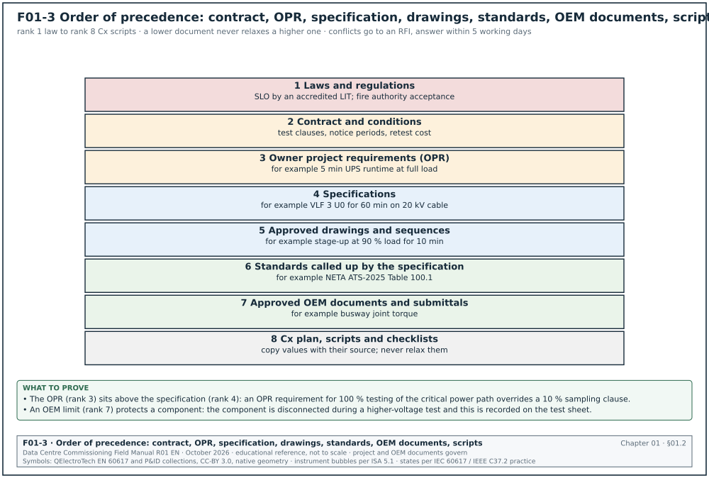
01.2.1The usual order
Figure F01-3 shows the hierarchy. When two documents disagree, the conditions of contract set the order. Where the contract is silent for commissioning documents, the usual practice on hyperscale programmes is the order below (it matches section 04.12.3 of this manual).
| Rank | Document | Who controls changes | Example of a conflict it decides |
|---|---|---|---|
| 1 | Laws and regulations | the state | SLO inspection by an accredited technical inspection body (LIT) is required whatever the contract says |
| 2 | Contract and conditions of contract | owner and contractor by agreement | contract states that tests are witnessed with 7 days' notice |
| 3 | Owner's project requirements (OPR) | owner | OPR requires 5 min UPS runtime at full load |
| 4 | Specifications | engineer of record (EoR) through change control | specification requires very low frequency (VLF) test at 3 U0 for 60 min (example value) |
| 5 | Approved drawings and sequences of operation | EoR | sequence states chiller stage-up at 90 % load for 10 min |
| 6 | Standards called up by the specification | standards body | NETA ATS table value used where the specification names NETA |
| 7 | Approved OEM documents and submittals | OEM through the submittal process | OEM torque value for a busway joint |
| 8 | Cx plan, scripts and checklists | CxM | script tolerance for supply air temperature |
01.2.2Rules for applying the hierarchy
- The stricter value is not automatically correct. A stricter value in a lower document does not override a higher document. If the specification states a 1 min insulation resistance (IR) test and the OEM manual states 10 min with a polarisation index, raise a request for information (RFI, chapter 05) to the EoR. Do not apply either value alone.
- OEM limits protect the equipment. Where a standard test voltage exceeds the OEM rating of a component (for example a surge arrester or an electronic trip unit), the OEM limit applies to that component and the component is disconnected. Record this on the test sheet.
- Laws apply even when the contract omits them. The SLO and the fire authority acceptance are required regardless of the contract text.
- A script cannot relax a specification. If a script tolerance is wider than the specification, the specification governs and the script is revised.
- A conflict is recorded. Every conflict found is a request for information (RFI) with the two clauses quoted. The answer is filed against both documents so the next reader finds it.
Worked example: Conflict on cable test voltage. The 20 kV cable specification for building B2 states "VLF withstand at 3 U0 for 60 min". This is an example value that follows CENELEC HD 620 practice; the IEEE 400.2 acceptance level for the 20 kV row is 26 kV rms for 30 min (section 13.8.3). The cable manufacturer's commissioning note for the same cable states "VLF withstand at 2 U0 for 15 min for cables older than 5 years; for new installation follow the project specification". U0 for a 12/20 kV cable is 12 kV. The specification requires 3 × 12 = 36 kV for 60 min. The OEM note applies to aged cable and defers to the specification for new cable. There is no conflict. The CxM records the reading in the script header: "Applied value 36 kV rms VLF 0.1 Hz, 60 min, source specification 26 05 13 clause 3.4.B (confirm the level against IEEE 400.2-2024 Table 3 and the CENELEC HD 620 part for the cable type)". If the OEM note had stated a lower maximum for new cable, the CxM would raise an RFI to the EoR with both clauses and stop the test until the answer is issued. The RFI answer limit in chapter 05 is 5 working days.
01.3Commissioning process documents
These documents describe the commissioning process itself: who does what, which documents are produced and when. They do not give test values for equipment.
01.3.1Process documents register
| Code and edition | Publisher | Scope | What it requires of commissioning | Chapter | How to obtain |
|---|---|---|---|---|---|
| ASHRAE Guideline 0-2019, The Commissioning Process | ASHRAE | Process for all building systems, new construction, organised by phase | OPR, basis of design (BOD), Cx plan, design review, checklists, test procedures, issues log, training, systems manual, final Cx report, seasonal testing, lessons learned | 02, 03 | ASHRAE bookstore, print or PDF, single-user licence |
| ANSI/ASHRAE/IES Standard 202-2024, The Commissioning Process Requirements for New Buildings and New Systems | ASHRAE, IES | Minimum Cx process for new buildings and new systems, organised by documents | Minimum activities and documents with acceptance requirements; issues and resolution log | 02, 03 | ASHRAE bookstore; ANSI webstore |
| ANSI/ASHRAE Standard 230-2022, Commissioning Process for Existing Buildings and Systems | ASHRAE | Minimum requirements for existing building Cx | Applies to retro-commissioning of an operating hall | 02 | ASHRAE bookstore |
| ASHRAE Guideline 0.2-2015, Commissioning Process for Existing Systems and Assemblies | ASHRAE | Existing buildings | Planning, assessment, investigation, implementation, verification, documentation | 02, 30 | ASHRAE bookstore |
| ASHRAE Guideline 1.1-2025, Application of the Commissioning Process to New HVAC&R Systems (supersedes 1.1-2007) | ASHRAE | Heating, ventilation, air conditioning and refrigeration (HVAC&R) | HVAC&R technical requirements, sample construction checklists and test formats | 18, 19, 22 | ASHRAE bookstore |
| ASHRAE Guideline 1.2-2019 | ASHRAE | Existing HVAC&R systems | Applies Guideline 0.2 to existing HVAC&R | 30 | ASHRAE bookstore |
| ASHRAE Guideline 1.3-2026, Application of the Commissioning Process to Building Operation and Maintenance Training (supersedes 1.3-2018) | ASHRAE | Operator training | Training needs, curriculum, verification of training | 03, 12 | ASHRAE bookstore |
| ASHRAE Guideline 1.4-2019, Preparing Systems Manuals for Facilities (addendum a, 2024) | ASHRAE | Systems manual | Content and assembly of the systems manual; addendum a expands section 4.1 | 03, 12 | ASHRAE bookstore |
| ASHRAE Guideline 1.5-2017, The Commissioning Process for Smoke Control Systems | ASHRAE | Smoke control | Technical requirements for smoke control Cx; the 2012 edition replaced Guideline 5; the ASHRAE bookstore lists 1.5-2017 | 20 | ASHRAE bookstore |
| NIBS Guideline 3-2012, Building Enclosure Commissioning Process (BECx) | National Institute of Building Sciences | Building enclosure (roof, walls, glazing, air barrier) | Enclosure OPR, enclosure Cx specification, design review, field testing of air and water tightness | 02, 18 | Free PDF on the Whole Building Design Guide (WBDG) |
| ASTM E2813-26, Standard Practice for Building Enclosure Commissioning | ASTM International | Enclosure | Companion standard practice to NIBS Guideline 3 | 02 | ASTM store |
| BCxA New Construction Building Commissioning Best Practices | Building Commissioning Association | New construction, all building types | Condensed list of ideal Cx activities and common pitfalls; released December 2011 | 02, 03 | bcxa.org, free download to members and public |
| ACG Commissioning Guideline, 2nd edition (2005) | AABC Commissioning Group | Building systems | Process, responsibilities, sample forms; now study material for the ACG technician exam | 02 | Free PDF at commissioning.org |
| ACG Building Systems Commissioning Guideline (2022, digital) | AABC Commissioning Group | Independent third-party Cx | Best practice for independent Cx providers, living document | 02, 03 | ACG website, purchase or member access |
| BSRIA BG 8/2009, Model Commissioning Plan | BSRIA (UK) | Commissioning plan for a construction project | Template for the Cx plan: roles, programme, documents, sign-off | 03 | BSRIA bookshop |
| BSRIA BG 49/2024, Commissioning Air Systems | BSRIA | Ventilation and air systems | Functional test and regulation (balancing) of air systems | 19 | BSRIA bookshop |
| BSRIA BG 29/2021, Pre-commission Cleaning of Pipework Systems (amended 6th edition) | BSRIA | Flushing, cleaning, water treatment before commissioning | Flushing velocities, sampling, water quality acceptance, records | 18, 19 | BSRIA bookshop |
| BSRIA BG 54/2018, Soft Landings Framework | BSRIA | Handover and the period after handover | Six phases from inception to post-occupancy, champion role, checklist | 12 | BSRIA bookshop |
| CIBSE Commissioning Code M: Commissioning Management (2022) | CIBSE (UK) | Management of commissioning | Roles, programme, documentation, witnessing; read with the technical codes | 02, 03 | CIBSE knowledge portal |
| CIBSE Commissioning Code A: Air Distribution Systems (2024; 1996 archived) | CIBSE | Air distribution | Setting to work, functional testing and regulation of air flow, tolerances, records | 19 | CIBSE knowledge portal |
| CIBSE Commissioning Code B: Boilers (2002) | CIBSE | Boilers | Rarely used on data centres; kitchen and office plant only | 18 | CIBSE knowledge portal |
| CIBSE Commissioning Code C: Automatic Controls (2001) | CIBSE | Controls | Point checks, loop tuning, sequence tests | 21, 22 | CIBSE knowledge portal |
| CIBSE Commissioning Code L: Lighting (2018) | CIBSE | Lighting | Lighting controls and emergency lighting checks | 20 | CIBSE knowledge portal |
| CIBSE Commissioning Code R: Refrigerating Systems (2002) | CIBSE | Refrigeration | Pressure and leak tests, charging, start-up | 18 | CIBSE knowledge portal |
| CIBSE Commissioning Code W: Water Distribution Systems (2025; 2010 archived) | CIBSE | Water distribution | Flow regulation, proportional balancing, tolerances | 18, 19 | CIBSE knowledge portal |
| CSI MasterFormat 01 91 13 General Commissioning Requirements | Construction Specifications Institute | Division 01 specification section | Contractor duties in Cx, documents, schedule, witness notice, retest cost; three-part format | 03, 06, 07 | Owner master specification; MasterFormat numbers from CSI |
01.3.2ASHRAE Guideline 0-2019: what it requires
Guideline 0 is the base text for the commissioning process on most hyperscale projects. ASHRAE describes the process as having three elements: communication, documentation and verification, all started in pre-design and continued through every phase (source 1). Guideline 0 is organised by the phases pre-design, design, construction, and occupancy and operations. Chapter 02 gives the activities of each phase. Figure F01-6 shows what happens to each commissioning document in each phase.

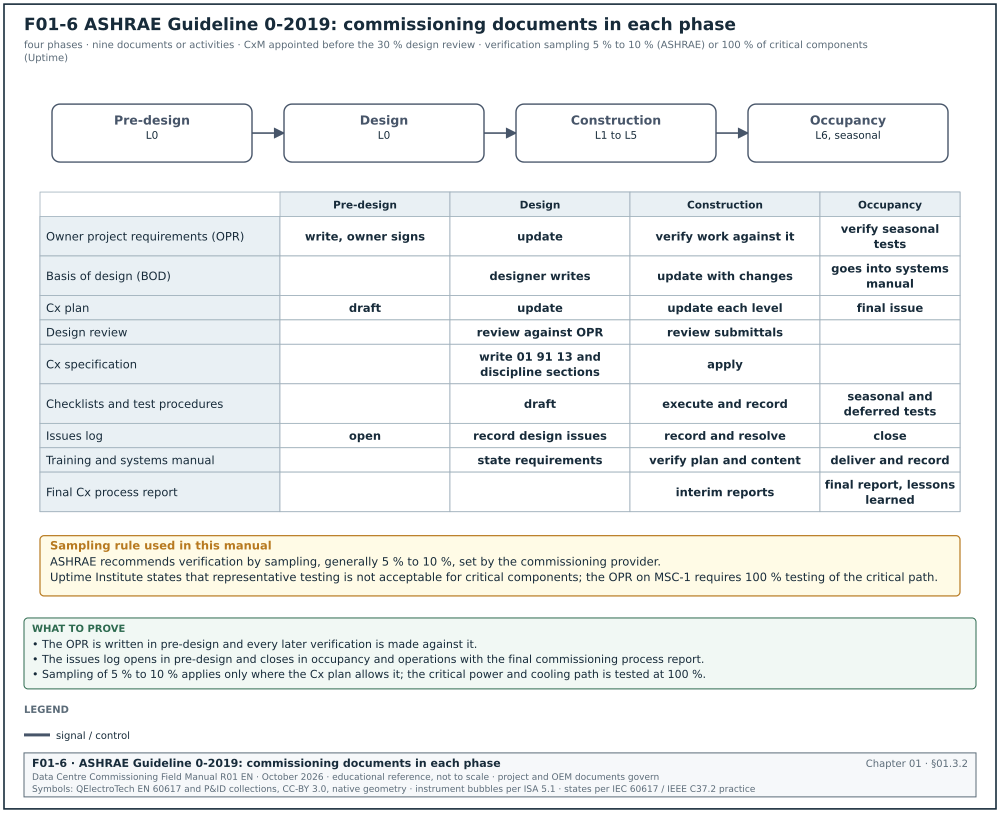
- Start in pre-design. Guideline 0 recommends that commissioning starts in pre-design with an independent commissioning provider and a commissioning team. On a campus, this means the CxM is appointed before the 30 % design review of building 1.
- Write the OPR first. The OPR states the minimum characteristics of a successful project from the owner's view, with verifiable benchmarks. It is completed in pre-design and becomes the basis for all verification.
- Get a basis of design from the designer. The BOD records assumptions, methods, selections and decisions, and the narrative of operation and control sequences.
- Keep a Cx plan current. The Cx plan starts in pre-design and is updated in each phase.
- Review the design against the OPR. The design review checks that the design will deliver the OPR. Guideline 0 recommends sampling of design documents as a procedure; the scope is a project decision.
- Put commissioning into the construction documents. The specifications must carry general conditions (participation, consequences of non-compliance) and section-specific requirements (checklists, test procedures, training).
- Use construction checklists and test procedures. Checklists cover delivery, pre-installation condition, installation, and operation in isolation. Test procedures are scripted and allow easy recording.
- Verify by sampling where agreed. The ASHRAE course states that ASHRAE recommends sampling for verifications at 5 % to 10 %, set by the commissioning provider (source 1). On mission-critical facilities, Uptime Institute states that representative testing is not acceptable for critical components (source 12). Chapter 02 shows how the two positions are combined.
- Keep an issues log. The issues log is the shared record of issues and their resolution. Standard 202 calls it the issues and resolution log.
- Verify training and the systems manual. Both are verified during construction.
- Finish in occupancy. Seasonal and deferred tests, a lessons-learned workshop and the final commissioning process report are completed in occupancy and operations.
01.3.3ANSI/ASHRAE/IES Standard 202-2024: what it requires
Standard 202 is the minimum process. It is written so that a specification or a code can call it up. ASHRAE's catalogue gives the 2024 title as "The Commissioning Process Requirements for New Buildings and New Systems" and describes it as identifying "the minimum acceptable Commissioning Process (Cx) for new buildings and new systems" with "procedures, methods, and documentation requirements for each activity for project delivery, from predesign through occupancy and operations" (source 2). Existing buildings are covered by Standard 230.
- Organisation by document. Standard 202 is organised around the documents that record commissioning activities and responsibilities. Guideline 0 is organised by phase.
- Owner selects the systems. The owner selects the systems and assemblies to be commissioned, unless a code sets them.
- Minimum content of each document. Each document has minimum content (OPR, BOD review, Cx plan, Cx requirements in the construction documents, checklists, test procedures, issues and resolution log, training requirements, systems manual, Cx report). Read the clause list of the current edition before writing the project Cx specification.
- Use in the specification. For example, section 01 91 13 contains "Commissioning process shall comply with ANSI/ASHRAE/IES Standard 202-2024 as a minimum and shall follow ASHRAE Guideline 0-2019".
01.3.4The ASHRAE Guideline 1.x family
ASHRAE presents Guideline 0 and Standard 202 as process documents and the 1.x guidelines as technical support for a system type (source 1). The 2020 ASHRAE course listed a Guideline 1.6 for data centres as work in progress. In this research no published Guideline 1.6 was found; a CxM should ask ASHRAE or check the bookstore before citing it.
| Guideline | Subject | Use on a data-centre campus |
|---|---|---|
| 1.1 | New HVAC&R systems | Checklist and test formats for chillers, pumps, air handlers, computer room air handlers (CRAH) |
| 1.2 | Existing HVAC&R systems | Retro-commissioning of an operating hall after a change |
| 1.3 | Operator training | Training plan for the operations team (chapter 12) |
| 1.4 | Systems manual | Systems manual structure (chapter 03) |
| 1.5 | Smoke control | Smoke exhaust in battery rooms, atria and stair pressurisation (chapter 20) |
| 0.2 | Existing systems process | Process for commissioning an existing building |
01.3.5NIBS Guideline 3, BCxA and ACG
NIBS Guideline 3-2012 is the second edition of the building enclosure commissioning guideline (first edition 2005). NIBS states that it is used with ASHRAE Guideline 0, which covers the whole building, while Guideline 3 covers the enclosure (source 4). On a data centre the enclosure matters for two reasons: water entry into electrical rooms and air leakage that upsets room pressure and humidity control. Guideline 3 requires an enclosure part of the OPR, a project-specific enclosure Cx specification, design review and field tests.
The Building Commissioning Association published its New Construction Building Commissioning Best Practices to condense long lists of tasks into the activities of an ideal process and to list common pitfalls (source 5). The ACG Commissioning Guideline 2nd edition (2005) is free; ACG now uses the Building Systems Commissioning Guideline (2022) as its reference for independent third-party commissioning providers (source 6).
01.3.6BSRIA and CIBSE documents
BSRIA and CIBSE documents are British. Asian projects designed by UK or Singapore consultants call them up for flushing and air balancing.
- BG 29/2021 for flushing. BG 29 is the BSRIA guide that data-centre specifications call up for chilled-water and technology cooling loops. It sets the flushing method, the sampling and the water quality acceptance before the system is filled for commissioning. Chapter 18 applies it.
- BG 49/2024 for air systems. BG 49 covers the functional test and regulation of air systems. Chapter 19 applies it to CRAH and fan walls.
- BG 8/2009 for the Cx plan. BG 8 is a template for the commissioning plan. Chapter 03 compares it with the Guideline 0 content.
- BG 54/2018 for handover. The Soft Landings Framework has six phases and names a soft landings champion. Chapter 12 uses it for the period after handover.
- CIBSE Code M (2022). Code M is the management code and is read with the technical codes A, B, C, L, R and W.
- CIBSE Code W (2025) and Code A. These give the method and the tolerances for water and air flow regulation where the specification calls them up. Chapters 18 and 19 apply them.
01.3.7CSI MasterFormat section 01 91 13
Section 01 91 13 General Commissioning Requirements is the Division 01 section that makes the commissioning process a contractor obligation. Owner master specifications use the three-part format: Part 1 General, Part 2 Products and Part 3 Execution (source 7). Four discipline sections carry the technical commissioning requirements. They are 23 08 00 (commissioning of HVAC), 26 08 00 (commissioning of electrical systems), 27 08 00 (commissioning of communications) and 28 08 00 (commissioning of electronic safety and security). The owner master specification can number them differently; its index governs. Chapter 03 lists the articles of 01 91 13.
Check: At tender review, read section 01 91 13 for four items: the named Cx process document and edition, the witness notice period, the retest cost clause, and the list of systems to be commissioned. If any of the four is missing, raise it in the design review log.
01.4Data-centre standards
01.4.1Data-centre standards register
The register lists the documents that rate a data centre and the publications of ASHRAE Technical Committee 9.9. Figure F01-7 compares the four rating systems and shows what commissioning must demonstrate for each. The four systems are Uptime Tier I to IV, TIA-942-C Rated 1 to 4, BICSI Class F0 to F4, and the EN 50600 and ISO/IEC 22237 availability classes 1 to 4.

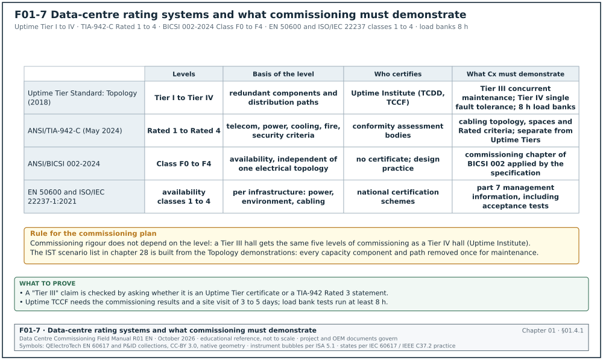
| Code and edition | Publisher | Scope | What it requires of commissioning | Chapter | How to obtain |
|---|---|---|---|---|---|
| Tier Standard: Topology (effective 1 January 2018) | Uptime Institute | Four Tier classifications by redundant capacity components and distribution paths | Concurrent maintainability (Tier III) and fault tolerance (Tier IV) must be demonstrated; drives the integrated systems test (IST) scenario list | 02, 28 | Free download from uptimeinstitute.com after registration |
| Tier Standard: Operational Sustainability (latest found effective 1 April 2013) | Uptime Institute | Behaviours and risks beyond Tier that affect long-term performance: staffing, maintenance, training, planning | Operations readiness evidence: procedures, training records, maintenance programme | 12, 31 | Free download after registration |
| Tier Certification of Design Documents (TCDD), Constructed Facility (TCCF), Operational Sustainability | Uptime Institute | Certification programmes | TCCF needs the commissioning results; site visit of 3 to 5 days about one month after critical systems construction ends; client supplies load banks and technicians | 28 | Uptime contract |
| ANSI/TIA-942-C (May 2024) | Telecommunications Industry Association, committee TR-42 | Telecommunications infrastructure of data centres, with architecture, power, cooling, fire, security, safety and monitoring | Rated 1 to 4 criteria; cabling topology and spaces; edge data centres added from addendum B-1 | 26 | TIA store, purchase |
| ANSI/BICSI 002-2024, Data Center Design and Implementation Best Practices | BICSI | Design and implementation, 575 pages, 17 chapters, 12 appendices | Availability Classes F0 to F4; includes a commissioning chapter (read the chapter list of the 2024 edition) | 02, 26 | BICSI store, purchase |
| EN 50600 series | CENELEC | European data-centre facilities and infrastructures | Parts -1 general, -2-1 to -2-6 building, power, environmental, cabling, security; -3-1 management and operational information; -4 key performance indicators (KPI) | 01, 30 | National standards bodies |
| ISO/IEC 22237 series (part 1 is ISO/IEC 22237-1:2021; parts 2 to 7 and later parts) | ISO and IEC | International counterpart of EN 50600 | Availability classes per infrastructure; part 7 covers management and operational information including acceptance testing (parts 2 and 6 are 2024 editions, parts 3 and 4 are 2021 editions, parts 5 and 7 are Technical Specifications of 2018, as listed in a 2025 TÜV SÜD conformity certificate) | 01, 30 | ISO store |
| ISO/IEC 30134 series | ISO and IEC | Data-centre KPIs: power usage effectiveness (PUE), renewable energy factor and others | Defines PUE measurement categories used in acceptance reports | 30 | ISO store |
| Thermal Guidelines for Data Processing Environments, 5th edition (2021) | ASHRAE TC 9.9 | Air and liquid environmental classes for IT equipment | Air class A1 recommended envelope 18 °C to 27 °C; humidity limits; liquid classes named by maximum facility water temperature | 19, 28, 30 | ASHRAE bookstore |
| Liquid Cooling Guidelines for Datacom Equipment Centers, 2nd edition (2014) | ASHRAE TC 9.9 | Liquid cooling design | Interface between chilled-water and technology cooling systems, water temperature classes, water quality, wetted materials | 19 | ASHRAE bookstore |
| ANSI/ASHRAE Standard 90.4-2025, Energy Standard for Data Centers (supersedes 90.4-2022) | ASHRAE | Energy efficiency of data centres | Mechanical load component (MLC) and electrical loss component (ELC) compliance | 30 | ASHRAE bookstore |
01.4.2Uptime Institute: what the Tier Standards require of commissioning
- Topology sets the tests. Tier III requires that every capacity component and distribution path can be removed for maintenance without affecting the critical load. Tier IV adds tolerance of a single fault. The IST scripts in chapter 28 demonstrate both.
- Commissioning rigour does not depend on Tier. Uptime Institute writes that "the rigor associated with commissioning a data center has little relationship to its Tier level" (source 12). Under this rule a Tier III hall gets the same five levels of commissioning as a Tier IV hall: Level 1 (L1) factory tests to Level 5 (L5) integrated systems test, as chapter 02 defines them.
- Load bank duration. Uptime recommends minimum continuous runtime of 8 hours for all load bank tests (source 12).
- Every critical component is tested. Uptime states that representative testing should not be acceptable for mission-critical data centres (source 12).
- Fire systems stay active during Level 5. Uptime recommends running Level 5 tests with fire detection and suppression active.
- Certification sequence. TCDD is a prerequisite for TCCF, and both are prerequisites for the Operational Sustainability rating (source 13).
01.4.3TIA-942-C, BICSI 002 and the EN 50600 and ISO/IEC 22237 series
TIA-942-C was published in May 2024 (source 14). It is the reference for the telecommunications spaces, cabling topology and cabinet widths. Its Rated levels are a TIA rating and are separate from Uptime Tiers. ANSI/BICSI 002-2024 was published in May 2024 and replaces the 2019 edition (source 15). Its availability Classes F0 to F4 are intentionally independent of a single electrical topology.
The DKE notice on the European and international series shows that ISO/IEC 22237 began as technical specifications taken from the first EN 50600 editions and that most parts map one to one (source 16). The mapping is shown below.
| ISO/IEC 22237 part | EN 50600 counterpart | Subject | What the CxM checks |
|---|---|---|---|
| 22237-1 | 50600-1 | general concepts, availability classes | the OPR states the availability class |
| 22237-2 | 50600-2-1 | building construction | the building design review uses the same class |
| 22237-3 | 50600-2-2 | power distribution | the power redundancy tests match the class |
| 22237-4 | 50600-2-3 | environmental control | the cooling redundancy tests match the class |
| 22237-5 | 50600-2-4 | telecommunications cabling infrastructure | the cabling test scripts name the part |
| 22237-6 | 50600-2-5 | security systems | the security test scripts name the part |
| 22237-7 | 50600-3-1 | management and operational information | the acceptance test records follow the part |
| ISO/IEC 30134 series | 50600-4 series | key performance indicators | the PUE category is stated in the acceptance report |
01.4.4ASHRAE TC 9.9 publications
The Thermal Guidelines (5th edition, 2021) give the environmental classes that the white-space acceptance tests use. The fifth edition added research on high humidity and gaseous pollutants, a high-density class, and renamed the liquid cooling classes by maximum facility water temperature (source 17). In the MSC-1 worked example, the technology cooling system (TCS) supply is 45 °C and the facility water system (FWS) supply is 35 °C. The liquid class that the OEM declares for the rack must cover the TCS supply temperature with the tolerance stated by the OEM. Chapter 19 gives the test.
01.5Electrical standards
01.5.1Electrical standards register
The register lists the electrical test, product and safety standards with the edition checked on 1 November 2026. Figure F01-8 shows, for seven equipment types, which document gives the test list, which gives the method and the agreed example acceptance value.

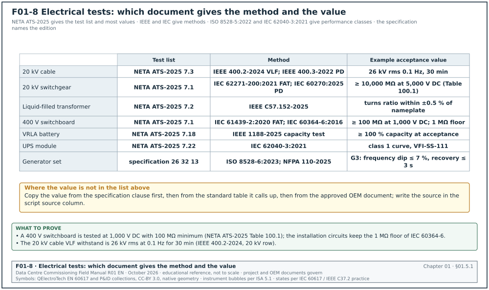
| Code and edition | Publisher | Scope | What it requires of commissioning | Chapter | How to obtain |
|---|---|---|---|---|---|
| ANSI/NETA ATS-2025, Acceptance Testing Specifications | InterNational Electrical Testing Association (NETA) | Acceptance tests for electrical equipment | Section 7 visual, mechanical and electrical tests per equipment type; Section 100 tables of test values (IR, withstand, torque, medium-voltage (MV) cable) | 13, 14, 16, 17 | NETA store, purchase |
| ANSI/NETA MTS-2023, Maintenance Testing Specifications | NETA | Maintenance tests | Baseline for post-handover tests; used for the first maintenance test at the end of the defects liability period (DLP) | 12, 29 | NETA store |
| IEEE 3007.1-2010, 3007.2-2010, 3007.3-2012 | IEEE | Operation and management, maintenance, safety of industrial and commercial power systems | Maintenance and safety practice for the handover programme | 10, 12 | IEEE Xplore |
| IEEE 3006.x series (for example 3006.3-2017, 3006.5-2014, 3006.7-2013, 3006.8-2018) | IEEE | Reliability of power systems | Reliability data and methods used to justify redundancy and test scope | 02, 28 | IEEE Xplore |
| IEEE 400-2023 (supersedes 400-2012) | IEEE | Guide for field testing and evaluation of shielded power cable systems rated 5 kV and above | Choice of test method (DC, VLF, damped AC, partial discharge) | 13 | IEEE Xplore |
| IEEE 400.2-2024 (supersedes 400.2-2013) | IEEE | VLF field testing of cable | VLF withstand voltage levels in rms values and durations, tan δ criteria | 13 | IEEE Xplore |
| IEEE 400.3-2022 (supersedes 400.3-2006) | IEEE | Partial discharge field testing of cable | Partial discharge (PD) test method and reporting | 13 | IEEE Xplore |
| IEEE C57.152-2025 (supersedes C57.152-2013) | IEEE | Diagnostic field testing of liquid-filled transformers | Turns ratio, winding resistance, power factor, excitation, dissolved gas baseline | 13 | IEEE Xplore |
| IEEE 450-2020 | IEEE | Maintenance, testing and replacement of vented lead-acid batteries | Acceptance and capacity test method and duration | 16 | IEEE Xplore |
| IEEE 1188-2025 (supersedes 1188-2005) | IEEE | Valve-regulated lead-acid (VRLA) batteries | Acceptance test, internal ohmic values, capacity test | 16 | IEEE Xplore |
| IEEE 485-2020 | IEEE | Sizing of lead-acid batteries | Battery sizing check against the duty cycle at design review | 16 | IEEE Xplore |
| IEC 62040-3:2021 | IEC | UPS performance and test requirements | Output performance classification, type and routine tests, efficiency, transfer behaviour | 16 | IEC webstore |
| ISO 8528-5:2022 | ISO | Generating sets driven by reciprocating engines: performance | Performance classes G1 to G4, transient voltage and frequency limits on load steps | 15 | ISO store |
| ISO 8528-6:2023 (supersedes 8528-6:2005) | ISO | Generating sets: test methods | Test methods for the factory and site tests, and simulation methods as an alternative check against ISO 8528-5 | 15 | ISO store |
| NFPA 110-2025 | National Fire Protection Association | Emergency and standby power systems | Level 1 and 2 systems; acceptance test with load; 2 h full-load test at installation where adopted (confirm the duration against NFPA 110-2025 7.13.4.3; a 2026 city building notice cites 7.13.4.3 for the two-hour full-load test without naming the edition) | 15 | NFPA, free read-only online |
| NFPA 70E-2024 (NFPA lists the 2027 edition as current; the contract edition governs) | NFPA | Electrical safety in the workplace | Energised work permits, arc flash boundaries, personal protective equipment (PPE), establishing an electrically safe work condition | 10 | NFPA, free read-only online |
| NFPA 70B-2026 (a standard since the 2023 edition) | NFPA | Electrical equipment maintenance | Equipment maintenance programme and intervals after handover | 12 | NFPA, free read-only online |
| IEC 60364-6:2016 | IEC | Low-voltage installations: verification | Initial verification by inspection and testing: continuity, IR, automatic disconnection, residual current device (RCD) tests | 14, 17 | IEC webstore |
| IEC 61439-1:2020 and IEC 61439-2:2020 | IEC | Low-voltage (LV) switchgear and controlgear assemblies | Design verification and routine verification; factory acceptance test (FAT) evidence for switchboards | 14 | IEC webstore |
| IEC 62271-200:2021 | IEC | AC metal-enclosed switchgear 1 kV to 52 kV | Type and routine tests; internal arc classification; FAT evidence | 13 | IEC webstore |
| IEC 60270:2025 (supersedes 60270:2000 with amendment 1:2015) | IEC | Partial discharge measurement | PD measurement method and calibration used for switchgear and cable PD tests | 13 | IEC webstore |
| IEC 61000-4-30:2025 (edition 4.0) | IEC | Power quality measurement methods | Class A meters for utility intake and generator bus | 17, 23 | IEC webstore |
01.5.2How the electrical standards are used together
- NETA ATS gives the test list and many values. For each equipment type, ATS section 7 lists the visual and mechanical inspections and the electrical tests. The values sit in the section 100 tables. The 2025 edition rewrote Table 100.6 for MV cable (source 19).
- IEEE and IEC give the method. IEEE 400.2 gives the VLF test method. IEC 60270 gives the PD measurement method. ISO 8528-5 gives the generator transient classes.
- IEC product standards give the factory evidence. IEC 61439 and IEC 62271-200 type and routine test reports are checked at the FAT (Level 1).
- IEC 60364-6 and PUIL 2020 give the low-voltage verification. These are the tests that the LIT inspector checks for the SLO.
- NFPA 70E governs safe work during every test. Chapter 10 applies it.
Worked example: Choosing the source of the IR acceptance value for a 400 V switchboard. The specification for building B2 states "test per ANSI/NETA ATS-2025 section 7.1". ATS section 7.1 refers to Table 100.1 for the minimum insulation resistance. For a 400 V system, Table 100.1 gives a test voltage of 1,000 V DC and a minimum of 100 MΩ for equipment rated 251 V to 600 V (confirm against ANSI/NETA ATS-2025 Table 100.1). IEC 60364-6 gives a lower minimum for the installation (1 MΩ at 500 V DC for circuits up to 500 V). The CxM uses the NETA value for the switchboard because the specification names NETA for equipment. The CxM uses the IEC 60364-6 value for the installation circuits because the SLO inspector checks against PUIL 2020. The test sheet ELE-L3-LVSB-B2-A1-01 shows both columns with their sources.
01.6Mechanical standards
01.6.1Mechanical standards register
| Code and edition | Publisher | Scope | What it requires of commissioning | Chapter | How to obtain |
|---|---|---|---|---|---|
| ANSI/ASHRAE Standard 111-2024 (supersedes 111-2008, reaffirmed 2017) | ASHRAE | Measurement, testing, adjusting and balancing of HVAC systems | Instruments, measurement methods, reporting for testing, adjusting and balancing (TAB) | 19 | ASHRAE bookstore |
| NEBB Procedural Standard for TAB, 2019, 9th edition | National Environmental Balancing Bureau | TAB procedures and report content | Mandatory NEBB report format for reports after 1 January 2020; instrument calibration | 18, 19 | NEBB store |
| AABC National Standards for Total System Balance, 7th edition | Associated Air Balance Council | TAB procedures | Tolerances and report forms used by AABC firms | 19 | AABC store |
| BSRIA BG 29/2021 | BSRIA | Pre-commission cleaning of pipework | Flushing, chemical cleaning, sampling and water quality acceptance | 18, 19 | BSRIA bookshop |
| CIBSE Code W (2025) | CIBSE | Water distribution | Flow regulation and tolerances | 18 | CIBSE knowledge portal |
| ASME B31.9-2025, Building Services Piping | ASME | Building services piping | Hydrostatic test at 1.5 times design pressure, minimum 10 min hold, or pneumatic test with limits (confirm the values against ASME B31.9-2025 para. 937) | 18 | ASME store |
| AHRI Standard 550/590-2026 (I-P) and 551/591-2026 (SI), which follow the 2023 editions | AHRI | Performance rating of water-chilling packages | Rating conditions and tolerances for factory performance tests of chillers | 18 | AHRI website, free |
| SMACNA HVAC Systems: Testing, Adjusting and Balancing, 4th edition (2023) | SMACNA | TAB manual | Method reference for air and water balancing | 19 | SMACNA store |
01.6.2How the mechanical standards are used together
The mechanical standards apply in the order of the site work: flushing, pressure test, chiller factory test and balancing. Figure F01-9 shows the four steps with the applied value, the record and the step that each record releases.

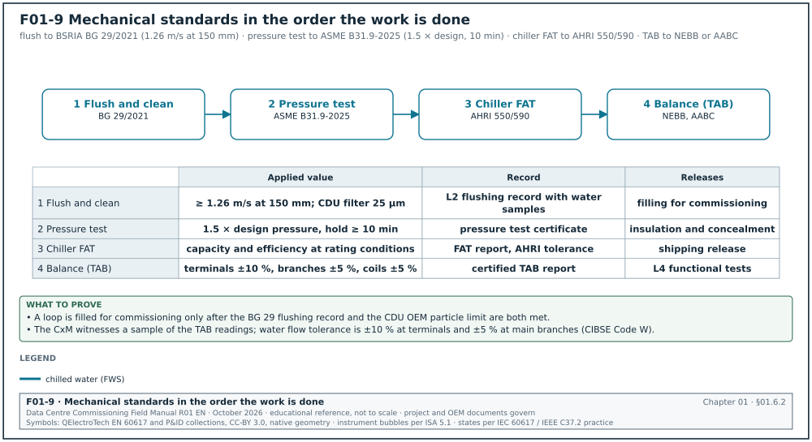
- Flush and clean first. BSRIA BG 29 defines when a loop is clean enough to fill and commission. A TCS loop for liquid-cooled racks has a stricter particle limit set by the coolant distribution unit (CDU) OEM. The OEM limit is copied into the L2 flushing record.
- Pressure test to the piping code. ASME B31.9 (or the code named in the specification) sets the test pressure and hold time.
- Test the chiller at the factory to AHRI 550/590. The FAT of a chiller compares capacity and efficiency against the rating at agreed conditions with the AHRI tolerance.
- Balance with a certified TAB firm. NEBB or AABC procedures govern the TAB report. The CxM witnesses a sample of the TAB readings (chapter 19).
01.7Fire and life safety standards
| Code and edition | Publisher | Scope | What it requires of commissioning | Chapter | How to obtain |
|---|---|---|---|---|---|
| NFPA 72-2025, National Fire Alarm and Signaling Code | NFPA | Fire alarm systems | Acceptance testing of every device, record of completion, test methods in NFPA 72-2025 Table 14.4.3.2 | 20 | NFPA, free read-only online |
| NFPA 2001-2025, Clean Agent Fire Extinguishing Systems | NFPA | Clean agent systems | Enclosure integrity (door fan) test, hold time, discharge sequence check | 20 | NFPA |
| NFPA 13-2025, Installation of Sprinkler Systems | NFPA | Sprinklers including pre-action | Hydrostatic test, trip test of pre-action valve | 20 | NFPA |
| NFPA 25-2026, Inspection, Testing and Maintenance of Water-Based Fire Protection Systems | NFPA | Water-based systems after acceptance | Baseline for the maintenance programme | 12, 20 | NFPA |
| NFPA 75-2024, Fire Protection of Information Technology Equipment | NFPA | IT equipment rooms | Construction, detection, suppression and power disconnect requirements | 20 | NFPA |
| NFPA 76-2024, Fire Protection of Telecommunications Facilities | NFPA | Telecom facilities | Detection and suppression for telecom spaces | 20 | NFPA |
| ASHRAE Guideline 1.5 | ASHRAE | Smoke control commissioning | Smoke control test method and records | 20 | ASHRAE bookstore |
| Permen PU 26/PRT/M/2008 | Ministry of Public Works, Indonesia | Fire protection systems in buildings and sites | Checks at planning, execution and use stages, including inspection of materials, operation of all fire installations and functional fitness tests | 20 | peraturan.bpk.go.id, free |
| SNI fire standards (for example SNI 03-3989 sprinklers, SNI 03-3985 fire detection) | Badan Standardisasi Nasional | Indonesian fire installation standards | Called up by the local fire authority for acceptance (confirm current SNI numbers and editions with the local fire authority, Dinas Gulkarmat DKI Jakarta) | 20 | BSN, purchase |
Common errors:
- Testing fire interfaces from a simulated signal only. NFPA 72 acceptance requires the real initiating device to be operated for the interface test. A CxM accepts a simulated input only for repeat tests after the first real test.
- Forgetting the local authority. In Jakarta the fire authority acceptance is separate from the owner's commissioning. Book the authority inspection at least 15 working days before the planned date. The 15 working days are a planning value; the current lead time is agreed with Dinas Gulkarmat DKI Jakarta.
01.8Controls, monitoring and network standards
| Code and edition | Publisher | Scope | What it requires of commissioning | Chapter | How to obtain |
|---|---|---|---|---|---|
| ANSI/ASHRAE Standard 135-2024 (BACnet) | ASHRAE | Building automation and control network protocol | Object types, services, BACnet/SC; device protocol implementation conformance statement (PICS) checked at submittal | 21, 22 | ASHRAE bookstore |
| ASHRAE Guideline 13-2024, Specifying Building Automation Systems | ASHRAE | Building management system (BMS) specification | Specification content, points list format, commissioning of BMS | 21, 22 | ASHRAE bookstore |
| ASHRAE Guideline 36-2024, High-Performance Sequences of Operation for HVAC Systems | ASHRAE | Standard sequences | Reference sequences and tests for air-side control | 22 | ASHRAE bookstore |
| ASHRAE Standard 223P, semantic data model | ASHRAE | Semantic tagging of building data | Second public review announced in ASHRAE Standards Actions of 24 April 2026, comments due 8 June 2026; not yet published in the sources read on 1 November 2026 | 21, 30 | ASHRAE |
| Project Haystack | Project Haystack organisation | Tagging convention | Tags and references for points; used in points list naming | 21 | project-haystack.org, free |
| Brick schema | Brick consortium | Resource Description Framework (RDF) ontology of building assets | Asset and point relationships for analytics | 21, 30 | brickschema.org, free |
| Modbus Application Protocol Specification V1.1b3 | Modbus Organization | Modbus protocol | Function codes, register addressing; used in interface control documents (confirm that V1.1b3 is still the current version on the Modbus Organization specifications page) | 21, 25 | modbus.org, free |
| IEC 61850 series | IEC | Communication in substations | generic object-oriented substation event (GOOSE) and manufacturing message specification (MMS) for protection relays; test of GOOSE messages at the substation (the protection specification names the parts, for example IEC 61850-8-1 for GOOSE and MMS and IEC 61850-10 for conformance testing) | 13, 25 | IEC webstore |
| IEEE 1588-2019, Precision Time Protocol (PTP) | IEEE | Network clock synchronisation | PTP profiles and accuracy for sequence-of-events time stamps | 23, 24 | IEEE Xplore |
| ANSI/TIA-568.2-E (2024) | TIA | Balanced twisted-pair cabling | Permanent link and channel test parameters and limits | 26 | TIA store |
| ANSI/TIA-568.3-E | TIA | Optical fibre cabling | Loss budget and test methods; refers to TIA-526-14-C for launch conditions | 26 | TIA store |
| ANSI/TIA-606-D (October 2021), Administration Standard | TIA | Labelling and records of cabling | Identifier format and records; some project specifications still name 606-C | 26 | TIA store |
| ISO/IEC 11801-1:2017 with amendment 1:2025 | ISO and IEC | Generic cabling | Cabling classes and channel performance | 26 | ISO store |
| ISO/IEC 14763-3:2024 (supersedes 14763-3:2014) | ISO and IEC | Testing of optical fibre cabling | Reference-grade connector limits and test methods, multi-fibre push-on (MPO) cabling tests | 26 | ISO store |
| IEC 61300-3-35:2022 | IEC | Fibre optic connector end-face inspection | Pass and fail criteria by zone for end-face defects | 26 | IEC webstore |
| IEC 61280-4-1:2019 with amendment 1:2021, and IEC 61280-4-2:2024 | IEC | Attenuation measurement of multimode and single-mode installed cabling | Encircled flux launch for multimode, test methods | 26 | IEC webstore |
| IEC 62443-3-3:2013 | IEC | Industrial communication network security | System security requirements and security levels for operational technology (OT) zones | 26, 27 | IEC webstore |
01.9Document management and contract documents
The contract documents decide when tests take place and what the test records release. Figure F01-10 places the FIDIC 2017 and NEC4 test clauses and the Indonesian legal hold points (LIT inspection, recommendation of fitness for energisation (RLB), SLO and fire authority acceptance) against the commissioning levels.

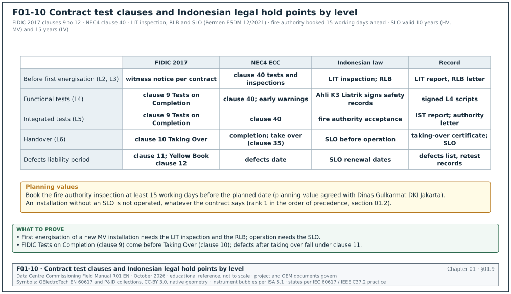
| Code and edition | Publisher | Scope | What it requires of commissioning | Chapter | How to obtain |
|---|---|---|---|---|---|
| ISO 19650-2:2018 | ISO | Information management during the delivery phase using building information modelling (BIM) | Common data environment (CDE), information containers, status and suitability codes | 04 | ISO store; UK BSI guidance free |
| FIDIC Conditions of Contract for Construction (Red Book) 2017 | FIDIC | Employer-designed works | Clause 9 Tests on Completion, clause 10 Employer's Taking Over, clause 11 Defects after Taking Over | 08, 12 | FIDIC bookshop |
| FIDIC Conditions of Contract for Plant and Design-Build (Yellow Book) 2017 | FIDIC | Contractor-designed works | Clause 9 Tests on Completion and clause 12 Tests after Completion | 08, 12 | FIDIC bookshop |
| NEC4 Engineering and Construction Contract (ECC), June 2017 with amendments of January 2019, October 2020 and January 2023 | Thomas Telford (NEC) | Collaborative contract | Clause 40 tests and inspections, early warnings, compensation events | 08 | NEC website |
| AIA A201-2017, General Conditions of the Contract for Construction | American Institute of Architects | US general conditions | Article 13.4 tests and inspections, uncovering and correction of work | 08 | AIA contract documents |
| ISO 9001:2015 | ISO | Quality management systems | Control of documented information, nonconformity and corrective action | 09 | ISO store |
01.10Indonesian laws, regulations and national standards
| Code and edition | Issuer | Scope | What it requires of commissioning | Chapter | How to obtain |
|---|---|---|---|---|---|
| Undang-Undang (UU) 30/2009 on Electricity | Republic of Indonesia | Electricity law | Basis for licences, SLO and competency certification; several articles amended by the job creation law (UU 11/2020, replaced by UU 6/2023) | 10 | peraturan.bpk.go.id |
| Permen ESDM 12/2021 | Ministry of Energy and Mineral Resources (ESDM) | Classification, competency, SLO for electricity installations | SLO before operation; high-voltage (HV) and MV utilisation SLO valid 10 years, LV 15 years; issued by an accredited LIT | 10, 12 | jdih.esdm.go.id |
| Permen ESDM 7/2021 | ESDM | Adoption of PUIL 2020 | Makes SNI 0225:2020 mandatory for LV installations | 14, 17 | jdih.esdm.go.id |
| SNI 0225:2020 (PUIL 2020) | BSN | General requirements for electrical installations, based on IEC 60364 | Design, installation and verification of LV installations | 14, 17 | BSN, purchase |
| Permenaker 12/2015 | Ministry of Manpower | Occupational safety and health of electricity in the workplace | Competent electrical safety experts (Ahli K3 Listrik), inspection and testing of installations | 10 | jdih.kemnaker.go.id |
| Permen PU 26/PRT/M/2008 | Ministry of Public Works | Fire protection | Fire installation checks and functional fitness tests | 20 | peraturan.bpk.go.id |
01.10.1What the Indonesian regulations add to the commissioning plan
- SLO is a legal gate. The SLO is issued by an accredited LIT after inspection and testing. An installation without SLO must not be operated. The Cx plan includes the LIT inspection as a hold point in the energisation programme (chapter 10).
- Energisation recommendation before first energisation. For new HV and MV installations the usual sequence is a recommendation of fitness for energisation (Rekomendasi Laik Bertegangan, RLB) before first energisation, then commissioning, then the SLO. Permen ESDM 12/2021 sets the SLO procedure and does not name the RLB; the current RLB procedure is agreed with the LIT and PLN (the state electricity company).
- Competent persons sign. Under Permenaker 12/2015 the electrical safety inspector is a competent person. The Cx plan lists the certificate numbers of the persons who sign the electrical safety records.
- Fire authority acceptance. The local fire authority inspects and accepts the fire installations. The Cx plan books this as a separate hold point after the owner's L4 fire tests.
01.11Reference books
The books below were checked against the Open Library catalogue for title, author, publisher and year (sources 21 to 34). The "use" column says when the CxM reads each book. Books are never cited as acceptance values.
| Book | Author | Publisher, year | Use on a data-centre campus | Catalogue URL |
|---|---|---|---|---|
| Data Center Handbook, 2nd edition | Hwaiyu Geng (editor) | Wiley, 2021 (1st edition 2014/2015) | Broad reference on design, power, cooling, operation; chapters on commissioning | https://openlibrary.org/works/OL17447135W |
| Maintaining Mission Critical Systems in a 24/7 Environment | Peter M. Curtis | Wiley-IEEE Press, 2007; 2nd edition 2011; 3rd edition 2021 | Power reliability, maintenance and testing of UPS, generators and switchgear | https://openlibrary.org/works/OL8231780W |
| Administering Data Centers | Kailash Jayaswal | Wiley, 2005 | Data-centre operation, layout and IT infrastructure background | https://openlibrary.org/works/OL5833851W |
| The Building Commissioning Handbook, 2nd edition | John A. Heinz, Rick Casault | APPA and Building Commissioning Association, 2004 | Commissioning process, roles and forms for owners | https://openlibrary.org/works/OL5801519W |
| Commissioning Buildings in Hot Humid Climates | J. David Odom, George DuBose | Fairmont Press, 2000 | Moisture, humidity control and building envelope in tropical climates (relevant to Jakarta) | https://openlibrary.org/works/OL8561639W |
| Principles of Building Commissioning | Walter T. Grondzik | Wiley, 2009 | Textbook on the ASHRAE process; source of the checklist sequence quoted in the ASHRAE course | https://openlibrary.org/works/OL8229959W |
| Build the Best Data Center Facility for Your Business | Douglas Alger | Cisco Press, 2005 | Planning of data-centre spaces, cabling and infrastructure | https://openlibrary.org/works/OL8961934W |
| Energy Efficient Thermal Management of Data Centers | Yogendra Joshi, Pramod Kumar (editors) | Springer, 2012 | Air flow, liquid cooling, thermal measurement methods | https://openlibrary.org/works/OL17446616W |
| Handbook of Smoke Control Engineering | John H. Klote and co-authors | ASHRAE, 2012 | Smoke control design and testing (with Guideline 1.5) | https://openlibrary.org/works/OL16599329W |
| HVAC Systems: Testing, Adjusting and Balancing, 4th edition | SMACNA | SMACNA, 2023 | TAB methods and instruments | https://openlibrary.org/works/OL37761749W |
| Electrical Power Equipment Maintenance and Testing, 2nd edition | Paul Gill | CRC Press, 2008 | Test methods for transformers, switchgear, cables, relays, batteries | https://openlibrary.org/works/OL2709639W |
| Data Center Fundamentals | Mauricio Arregoces, Maurizio Portolani | Cisco Press, 2003 | Network architecture of data centres | https://openlibrary.org/works/OL6216191W |
| The Datacenter as a Computer | Luiz André Barroso, Urs Hölzle | Morgan & Claypool, 2009 (later editions 2013 and 2018, per the Open Library record) | How a hyperscale operator designs and runs a warehouse-scale computer | https://openlibrary.org/works/OL9959158W |
| Inspection, Testing and Commissioning of Electrical Installations | Malcolm Doughton, John Hooper | Cengage Learning, 2012 | LV inspection and testing method based on BS 7671 (similar to IEC 60364-6) | https://openlibrary.org/works/OL21036234W |
A data-centre handbook attributed to "Bullock et al." was searched for and was not found in the Open Library catalogue. It is not listed here. Add it to the register only after the full title, publisher and year are confirmed.
01.12Maps of the library by phase and by system

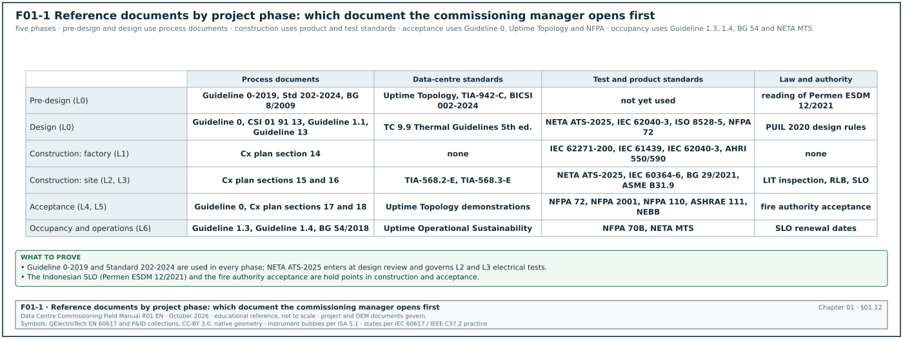

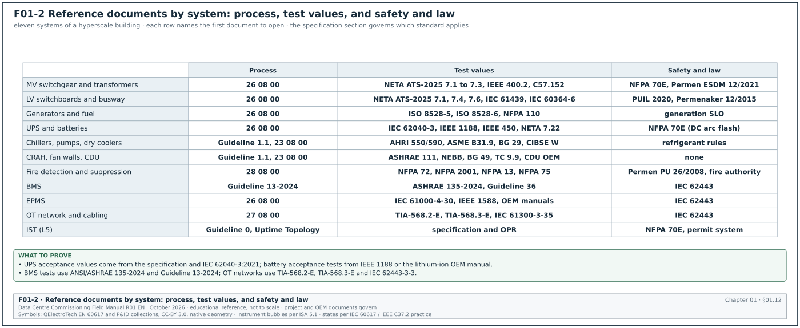
01.12.1Documents by project phase
Figure F01-1 shows which documents the CxM uses in each phase. The table gives the same map with the commissioning task that each document supports. The operations row cites the NETA Maintenance Testing Specifications (MTS).
| Phase | Commissioning task | Documents used first | Documents used for checking |
|---|---|---|---|
| Pre-design | Write OPR, appoint the commissioning authority (CxA), draft Cx plan | ASHRAE Guideline 0-2019, Standard 202-2024, BG 8/2009 | Uptime Topology, TIA-942-C, BICSI 002-2024 |
| Design | BOD review, design review against OPR, Cx specification | Guideline 0, CSI 01 91 13, ASHRAE Guideline 1.1, Guideline 13 | NETA ATS-2025, IEC 62040-3, ISO 8528-5, NFPA 72, TC 9.9 Thermal Guidelines |
| Construction: factory (L1) | Witness FAT | IEC 62271-200, IEC 61439, IEC 62040-3, ISO 8528-6, AHRI 550/590 | OEM test procedure, specification |
| Construction: site (L2, L3) | Installation checklists, start-up, pre-functional checks | NETA ATS-2025, IEC 60364-6, PUIL 2020, BG 29, ASME B31.9, TIA-568.2-E, TIA-568.3-E | OEM installation manual |
| Acceptance (L4, L5) | Functional tests, IST | Guideline 0, Uptime Topology, NFPA 72, NFPA 2001, NFPA 110, ASHRAE 111, NEBB | Approved sequences, cause-and-effect matrix |
| Occupancy and operations | Seasonal tests, training, systems manual, final report | Guideline 1.3, Guideline 1.4, BG 54, Uptime Operational Sustainability, NFPA 70B, NETA MTS | Lessons-learned log |
01.12.2Documents by system
Figure F01-2 maps documents to the systems of a hyperscale building. The table lists the first document to open for each system.
| System | Process and acceptance | Test values | Safety and law |
|---|---|---|---|
| 150 kV and 20 kV intake, MV switchgear, transformers | Guideline 0, specification 26 08 00 | NETA ATS-2025 sections 7.1, 7.2, 7.3; IEEE 400.2; IEEE C57.152; IEC 60270 | NFPA 70E, Permen ESDM 12/2021 |
| LV switchboards, busway, breakers | Specification 26 08 00 | NETA ATS-2025 sections 7.1, 7.4, 7.6; IEC 61439; IEC 60364-6 | PUIL 2020, Permenaker 12/2015 |
| Generators and fuel | Specification 26 32 13 Engine Generators | ISO 8528-5, ISO 8528-6, NFPA 110 | Permen ESDM 12/2021 for generation SLO |
| UPS and batteries | Specification 26 33 53 Static Uninterruptible Power Supply | IEC 62040-3, IEEE 1188, IEEE 450, NETA ATS-2025 section 7.22 and 7.18 | NFPA 70E for DC arc flash |
| Chillers, pumps, dry coolers | Guideline 1.1, specification 23 08 00 | AHRI 550/590, ASME B31.9, BG 29, CIBSE Code W | Refrigerant handling rules |
| CRAH, fan walls, CDU, TCS | Guideline 1.1 | ASHRAE 111, NEBB, BG 49, TC 9.9 Thermal Guidelines, CDU OEM | n/a |
| Fire detection and suppression | Specification 28 08 00 | NFPA 72, NFPA 2001, NFPA 13, NFPA 75 | Permen PU 26/2008, local fire authority |
| BMS | Guideline 13-2024 | ANSI/ASHRAE 135-2024, Guideline 36 | IEC 62443 |
| Electrical power monitoring system (EPMS) | Specification 26 09 13 Electrical Power Monitoring and Control | IEC 61000-4-30, IEEE 1588, OEM device manuals | IEC 62443 |
| OT network and cabling | Specification 27 08 00 Commissioning of Communications | TIA-568.2-E, TIA-568.3-E, IEC 61300-3-35, ISO/IEC 14763-3 | IEC 62443 |
| IST (L5) | Guideline 0, Uptime Topology | Specification, OPR | NFPA 70E, permit to work system |
01.13Edition control of referenced documents

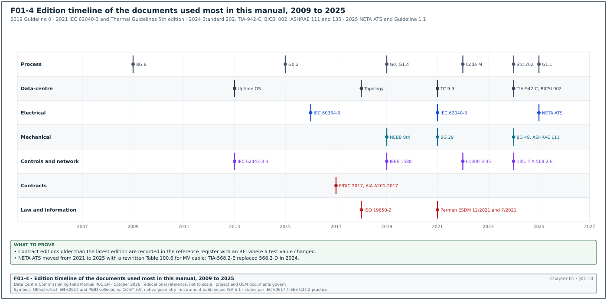
01.13.1Why edition control matters
Standards change values between editions. The NETA ATS 2025 edition rewrote the MV cable table. TIA-568.2-E replaced 568.2-D in 2024. A script that names the wrong edition can either reject good work or accept work that the current edition would fail. Figure F01-4 shows the editions used in this manual on a timeline.
01.13.2Reference register fields
The CxM keeps a reference register for the campus. It is a controlled document in the CDE (chapter 04).
| Field | Type | Example |
|---|---|---|
| Register ID | text | REF-0042 |
| Document code | text | ANSI/NETA ATS |
| Edition in contract | text | 2025 |
| Latest edition published | text | 2025 |
| Title | text | Standard for Acceptance Testing Specifications for Electrical Power Equipment and Systems |
| Publisher | text | NETA |
| Called up by | list of specification clauses | 26 08 00 clause 1.3.A; 26 05 13 clause 3.4 |
| Used in scripts | list of script IDs | ELE-L2-MVSG-, ELE-L3-LVSB- |
| Copy held | choice: licensed PDF, print, none | licensed PDF, 3 seats |
| Licence holder | text | owner Cx team |
| Date checked | date | 2026-10-31 |
| Checked by | name and role | CxM |
| Next check | date | 2027-04-30 |
| Notes | text | Table 100.6 MV cable values changed from 2021 |
01.13.3Procedure to check and change an edition
Purpose: Keep every referenced document at the edition stated in the contract, and handle a newer edition by change control.
Owner: Commissioning manager.
Trigger: Start of design review; every 6 months; when a publisher issues a new edition or an erratum.
Steps:
- List the references. Extract the "references" article from Part 1 of every specification section and from section 01 91 13. Enter each reference in the register within 10 working days of receiving the specification.
- Check the latest edition. Check the publisher catalogue for each reference. Record the latest edition and the date of the check. Allow 1 working day per 20 references.
- Compare contract edition and latest edition. Where they differ, read the summary of changes issued by the publisher and list the changes that affect a test value or a test method.
- Decide the action. If a change affects safety or a legal requirement, raise an RFI to the EoR within 2 working days. If the change affects only a test value, record it and raise it at the next design review.
- Change by instruction only. The contract edition changes only by a site instruction or a variation (chapter 08). The CxM does not apply a newer edition in a script without that instruction.
- Update scripts. After the instruction, revise every script that cites the document. Record the new revision in the script register within 5 working days.
- Record. Update the register with the new edition, the instruction number and the date.
Records: Reference register REF-MSC1, RFI log, script revision log.
Worked example: TIA-568.2 edition on the MSC-1 OT network. The OT network specification for building B1 was issued in March 2024 and names "ANSI/TIA-568.2-D". TIA published 568.2-E in October 2024. The CxM records REF-0071 with contract edition D and latest edition E. The cabling installer for building B2 starts in January 2027 and asks which edition to certify against. The CxM raises RFI-B2-ICT-0315 on 6 January 2027. The EoR answers on Monday 11 January (3 working days, counting 6 January as day 0). The answer states that the permanent link limits used on site stay at 568.2-D for building B2 because the tester firmware library already contains both. It also states that building B3 will move to 568.2-E by site instruction SI-B3-021. The CxM sets the tester limit to "TIA Cat 6A Perm. Link (568.2-D)" in script NET-L3-CU-B2-01 rev B and records the edition in the header of every test report.
01.13.4Edition timeline of the documents used most
| Year | Edition |
|---|---|
| 2009 | BSRIA BG 8/2009 |
| 2012 | NIBS Guideline 3-2012; Klote, Handbook of Smoke Control Engineering |
| 2013 | Uptime Tier Standard: Operational Sustainability (latest version found) |
| 2015 | ASHRAE Guideline 0.2-2015 |
| 2016 | IEC 60364-6:2016 |
| 2017 | FIDIC 2017 suite; AIA A201-2017 |
| 2018 | Uptime Tier Standard: Topology (effective 1 January 2018); BSRIA BG 54/2018; ISO 19650-2:2018 |
| 2019 | ASHRAE Guideline 0-2019; Guideline 1.4-2019; Guideline 1.2-2019; IEEE 1588-2019; NEBB TAB 9th edition |
| 2021 | IEC 62040-3:2021; IEC 62271-200:2021; BSRIA BG 29/2021; ASHRAE Thermal Guidelines 5th edition; Permen ESDM 12/2021; Permen ESDM 7/2021 |
| 2022 | CIBSE Code M; ACG Building Systems Commissioning Guideline; IEC 61300-3-35:2022; ASHRAE Standard 230-2022; IEEE 400.3-2022 |
| 2023 | IEEE 400-2023; ISO 8528-6:2023; ANSI/NETA MTS-2023 |
| 2024 | ANSI/ASHRAE/IES Standard 202-2024; ANSI/TIA-942-C; ANSI/BICSI 002-2024; ASHRAE 135-2024; Guideline 13-2024; NFPA 70E-2024; BSRIA BG 49/2024; TIA-568.2-E; ASHRAE 111-2024; IEEE 400.2-2024; ISO/IEC 14763-3:2024 |
| 2025 | ANSI/NETA ATS-2025; ASHRAE Guideline 1.1-2025; IEC 61000-4-30 edition 4.0; CIBSE Code W; IEEE 1188-2025; IEEE C57.152-2025; IEC 60270:2025; ASHRAE 90.4-2025; NFPA 72, 110, 2001 and 13 (2025 editions) |
| 2026 | ASHRAE Guideline 1.3-2026; NFPA 70B-2026; NFPA 25-2026; AHRI 551/591-2026 (SI; the I-P edition 550/590-2023 was still current when checked) |
01.13.5Further standards cited in the chapters, with the edition checked
The registers above list the documents the commissioning plan calls up by name. The chapters also cite the standards below for single values, test methods or definitions. The adopted edition is the one in the first column; the status column records what the publisher's catalogue or a national standards body listed on 1 November 2026. A chapter that quotes a value from an older edition says so beside the value. Figure F01-11 summarises what the check found and what the text does with each outcome.

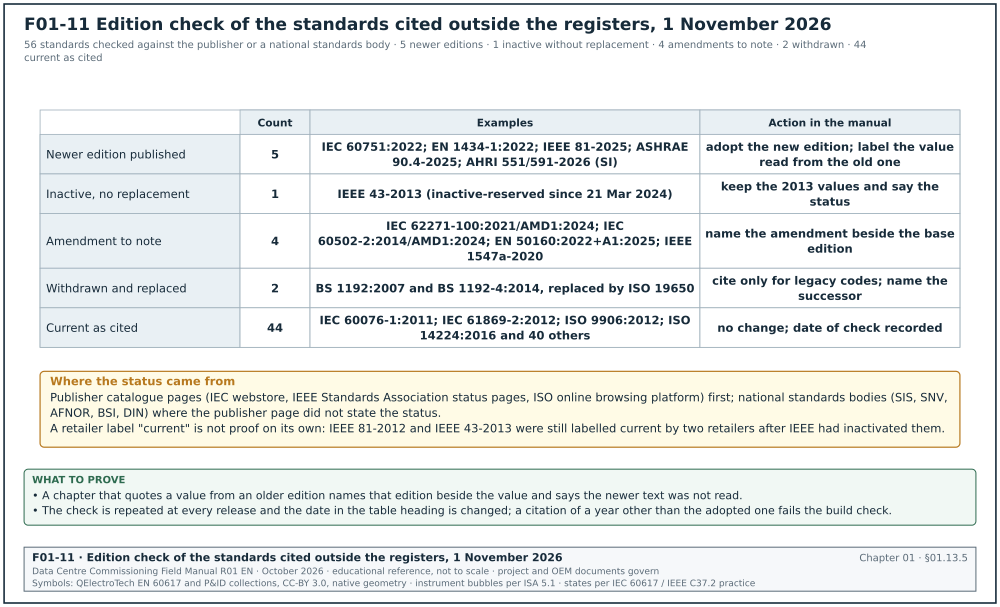
| Code and adopted edition | Publisher | Cited in chapters | Status checked 1 November 2026 |
|---|---|---|---|
| IEC 60076-1:2011 | IEC | 13, 33 | Edition 3.0, current; stability date 2028 |
| IEC 60422:2024 | IEC | 13, 33 | Edition 5.0, July 2024; replaced IEC 60422:2013 |
| IEC 60480:2019 | IEC | 13, 33 | Edition 3.0, current; replaced the 2004 edition |
| IEC 60502-2:2014 | IEC | 13 | Current with AMD1:2024 (consolidated edition 3.1, May 2024) |
| IEC 60751:2022 | IEC | 19, 28, 33 | Edition 3.0, January 2022; replaced IEC 60751:2008; chapter 28 quotes the 2008 class A formula and says so |
| IEC 60947-1:2020 | IEC | 14 | Edition 6.0, current, with corrigenda 2022 and 2024; edition 7 in development |
| IEC 61280-4-2:2024 | IEC | 01 | Edition 3.0, May 2024; replaced the 2014 edition |
| IEC 61439-2:2020 | IEC | 01 | Edition 3.0, current (the CENELEC adoption EN IEC 61439-2:2021 is in full force since 22 May 2024) |
| IEC 61643-11:2025 | IEC | 17 | Edition 2.0, June 2025; replaced the 2011 edition |
| IEC 61869-2:2012 | IEC | 08, 13, 23, 24, 30, 33 | Edition 1.0, current, with interpretation sheet IS1:2022 |
| IEC 62053-22:2020 | IEC | 24, 30, 32 | Edition 2.0, current; edition 3 in development |
| IEC 62271-1:2017+AMD1:2021 | IEC | 13 | Current consolidated edition |
| IEC 62271-100:2021 | IEC | 13 | Edition 3.0, current, with AMD1:2024 |
| IEC 62305-3:2024 | IEC | 17, 33 | Edition 3.0, September 2024; replaced the 2010 edition |
| IEC 62439-2:2021 and IEC 62439-3:2021 | IEC | 26, 33 | Current (62439-3 edition 4.0, December 2021, corrigendum April 2023 included) |
| IEC 62443-2-1:2024, IEC 62443-3-2:2020, IEC 62443-4-2:2019 | IEC | 27 | Current (62443-4-2 with corrigendum COR1:2022) |
| IEC/TR 61000-3-7:2008 | IEC | 17, 33 | Edition 2.0, current; a basic electromagnetic compatibility (EMC) publication |
| IEC 60092-302-2:2025 | IEC | 01 | Edition 2.0, October 2025; replaced the 2019 edition |
| IEEE 43-2013 | IEEE | 15, 33 | Inactive-Reserved since 21 March 2024; no replacement published; the 2013 values stay in use |
| IEEE 81-2025 | IEEE | 17, 33 | IEEE 81-2012 is Inactive-Reserved since 30 March 2023 and replaced by IEEE 81-2025; chapter 17 states which edition each value was read from |
| IEEE 519-2022 | IEEE | 16, 17, 33 | Current; replaced IEEE 519-2014 |
| IEEE 1547-2018 | IEEE | 15 | Active, with amendment IEEE 1547a-2020 (Table 13 trip settings for category III) |
| IEEE 1584-2018 | IEEE | 14, 33 | Active; IEEE 1584.1-2022 is a companion guide, not an amendment |
| IEEE C57.104-2019 | IEEE | 13, 33 | Current, with errata of 5 December 2019 |
| IEEE C57.106-2015 | IEEE | 13, 33 | Latest edition; replaced C57.106-1991 |
| ISO 4406:2021 | ISO | 15 | Current; reviewed and confirmed 2026 |
| ISO 8000-8:2015 | ISO | 30 | Current; reviewed and confirmed 2022 |
| ISO 8528-1:2018 | ISO | 15 | Current; reconfirmed 2023 |
| ISO 9000:2015 | ISO | 09, 32 | Current |
| ISO 9906:2012 | ISO | 18, 33 | Current (national adoptions list it as the latest edition) |
| ISO 10005:2018 | ISO | 07 | Current |
| ISO 14224:2016 | ISO | 27 | Edition 3, current; reviewed and confirmed 2022 |
| ISO 19650-1:2018 and ISO 19650-4:2022 | ISO | 04, 12, 32 | Current; part 4 replaced BS 1192-4:2014 for information exchange |
| ISO 20816-3:2022 | ISO | 11, 18, 33 | Current; replaced ISO 10816-3:2009 |
| ISO/IEC 25012:2008 | ISO/IEC | 30 | Current (national catalogue listing) |
| ISO/IEC 30134-2:2026 | ISO/IEC | 30, 33 | Edition 2, January 2026; replaced the 2016 edition |
| ANSI/ASHRAE 90.4-2025 | ASHRAE | 01, 19 | Current; the 2022 edition is still referenced by many adopted codes |
| ANSI/ASHRAE 111-2024 | ASHRAE | 01 | Current; replaced the 2008 edition |
| ASHRAE Guideline 14-2023 | ASHRAE | 30 | Current; replaced Guideline 14-2014 |
| AHRI 550/590-2023 (I-P) and AHRI 551/591-2026 (SI) | AHRI | 01, 18, 33 | 550/590-2023 is the current I-P edition (a 202x revision was in public review March to April 2026); 551/591-2026 (SI) was approved on 28 January 2026 |
| AHRI 1360-2022 (I-P) and AHRI 1361-2022 (SI) | AHRI | 19, 33 | Current; replaced the 2017 editions; the I-P text is public on law.resource.org |
| ANSI/ISA-18.2-2016 | ISA | 21 | Current; replaced the 2009 edition; a revision was planned from 2022 and had not been published when checked |
| EN 1434-1:2022 | CEN | 18, 33 | Replaced EN 1434-1:2015+A1:2018 on 7 September 2022 |
| EN 50160:2022 | CENELEC | 17 | Current, with amendment A1:2025; replaced EN 50160:2010 |
| BS 1192:2007 (withdrawn) | BSI | 04 | Replaced by the ISO 19650 series from January 2019; cited only for the legacy status codes |
| BS 1192-4:2014 (withdrawn) | BSI | 12 | Replaced by ISO 19650-4:2022 and the UK national annex for COBie |
| BS 8552:2012 | BSI | 18 | Current |
| NFPA 51B-2024 | NFPA | 10 | Current; the 2019 edition raised the fire watch to 1 hour |
| SNI 0225-6:2020 (PUIL part 6) | BSN, Indonesia | 10 | Current translation of IEC 60364-6 |
| SNI 03-1745-2000, SNI 03-3985-2000, SNI 03-3989-2000 | BSN, Indonesia | 20, 33 | The 2000 editions are the ones projects and the ministry rules cite; no later edition appeared in a web search on 1 November 2026; the BSN catalogue (sispk.bsn.go.id) is the place to check before a project adopts them |
| IEC 60076-11:2018 | IEC | 13 | Edition 2.0, August 2018, with corrigendum 2019 and interpretation sheet 2020 included; replaced the 2004 edition |
| IEC 60229:2007 | IEC | 13 | Edition 3.0, current; stability date 2028 |
| IEC 61869-3:2011 | IEC | 13 | Edition 1.0, current (national bodies list it as the latest edition); replaced IEC 60044-2 |
| NFPA 30-2024 | NFPA | 15 | Current; the full text is public on law.resource.org |
01.14Obtaining, licensing and holding the documents
01.14.1Access methods
- Purchase a licensed copy. Most standards are sold as single-user PDF files. A single-user licence does not allow the file to be placed on a shared drive. Buy one licence per named user who signs test records against the document.
- Use a subscription service. Standards subscription services give a team access to IEEE, IEC, ISO and ASTM documents. Check that the subscription includes withdrawn editions, because the contract may name an older edition.
- Use free read-only access. NFPA gives free read-only online access to its codes. Uptime Institute gives the Tier Standards free after registration. NIBS Guideline 3 is free on the WBDG. The ACG Commissioning Guideline 2nd edition is a free PDF.
- Use Indonesian legal databases. Permen and UU texts are free on peraturan.bpk.go.id and the ministry legal portals (JDIH).
- Ask the OEM. OEM installation and start-up manuals are supplied with the submittal. The specification must require the OEM to supply them in English (and in Indonesian where the operator needs it).
01.14.2Minimum set to hold on site
| Document | Copies on site | Held by |
|---|---|---|
| ASHRAE Guideline 0-2019 and Standard 202-2024 | 1 licensed set | CxM |
| ANSI/NETA ATS-2025 | 1 per electrical commissioning engineer | electrical Cx lead |
| IEC 62040-3:2021, ISO 8528-5, IEEE 1188, IEEE 450 | 1 licensed set | electrical Cx lead |
| NFPA 72, NFPA 2001, NFPA 110, NFPA 70E | online read-only access | fire and electrical leads |
| BSRIA BG 29/2021, ASHRAE 111, NEBB TAB | 1 licensed set | mechanical Cx lead |
| ASHRAE 135-2024, Guideline 13-2024 | 1 licensed set | controls Cx lead |
| TIA-568.2-E, TIA-568.3-E, IEC 61300-3-35 | 1 licensed set | network Cx lead |
| PUIL 2020, Permen ESDM 12/2021, Permenaker 12/2015, Permen PU 26/2008 | 1 set | CxM and environment, health and safety (EHS) lead |
| Approved OEM manuals | every submittal, in the CDE | document controller |
Common errors:
- Working from a summary. Test values copied from a vendor blog or a training slide are not a source. The CxM accepts a value only from the document itself or from the approved specification.
- Using an unlicensed copy. An unlicensed PDF on a shared drive is a breach of copyright and of most owner policies. The CxM keeps the licence record in the reference register.
- Losing the edition named in the contract. If the contract names an older edition, keep that edition. A subscription that shows only the current edition is not enough.
01.15Reading plan for a Jakarta hyperscale campus

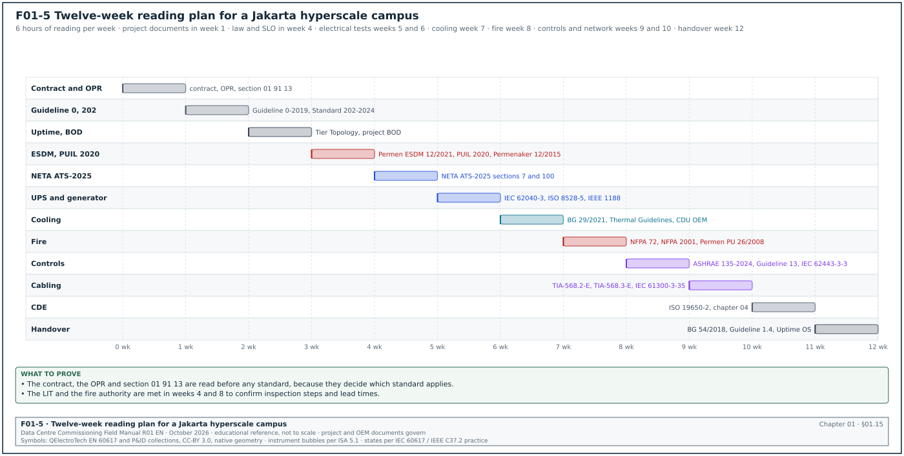
01.15.1Purpose of the plan
A new CxM on a Jakarta hyperscale campus has limited time before the first design review. The plan below sets the order of reading so that the documents needed first are read first. It assumes 6 hours of reading per week alongside site work. Figure F01-5 shows the plan as a timeline.
01.15.2Plan by week
| Week | Documents | Sections to read | Output |
|---|---|---|---|
| 1 | Project contract, conditions, OPR, section 01 91 13 | Order of precedence, test clauses, witness notice, retest cost; whole OPR | Note of contractual tests and notice periods |
| 2 | ASHRAE Guideline 0-2019, Standard 202-2024 | Process overview; pre-design, design and construction phase clauses; OPR, BOD and Cx plan content | Gap list for the project Cx plan |
| 3 | Uptime Tier Standard: Topology; project BOD | Tier III and Tier IV definitions; BOD redundancy and sequences | List of concurrent maintainability demonstrations for the IST |
| 4 | Permen ESDM 12/2021, PUIL 2020, Permenaker 12/2015 | SLO process; PUIL part 6 verification (IEC 60364-6 basis); competent person rules | Hold points for SLO and LIT in the energisation programme |
| 5 | ANSI/NETA ATS-2025 | Sections 7.1 switchgear, 7.2 transformers, 7.3 cables, 7.6 breakers, 7.22 UPS and ATS; Tables 100.1, 100.2, 100.6, 100.12 | Electrical test matrix by equipment type |
| 6 | IEC 62040-3:2021, ISO 8528-5, IEEE 1188 | UPS test types and performance classes; generator transient classes; VRLA acceptance tests (or the lithium-ion OEM manual) | UPS and generator L4 acceptance values |
| 7 | BSRIA BG 29/2021, ASHRAE Thermal Guidelines 5th edition, CDU OEM manual | Flushing and water quality; air and liquid classes | TCS and FWS flushing acceptance; white-space temperature limits |
| 8 | NFPA 72, NFPA 2001, Permen PU 26/2008, local fire authority requirements | Acceptance testing; enclosure integrity test; local inspection | Fire L4 and authority hold points |
| 9 | ASHRAE 135-2024, Guideline 13-2024, IEC 62443-3-3 | BACnet objects and BACnet/SC; BMS specification content; security levels | BMS and OT security test list |
| 10 | TIA-568.2-E, TIA-568.3-E, IEC 61300-3-35 | Test limits, launch conditions, end-face criteria | Network L3 acceptance values |
| 11 | ISO 19650-2, chapter 04 of this manual | CDE, status codes, naming | Cx document naming and filing rules |
| 12 | BSRIA BG 54/2018, ASHRAE Guideline 1.4-2019, Uptime Operational Sustainability | Handover phases, systems manual content, operations readiness | Handover checklist for building 1 |
01.15.3Rules for the reading plan
- Read the project documents before the standards. The contract and the specification decide which standard applies. Read week 1 before anything else.
- Read the listed sections first. Each standard is read for the sections listed in the plan. The rest is used as a reference when a question arises.
- Write the output. Each week ends with the written output in the last column. The output is a working note filed in the CDE under the CxM's work-in-progress folder.
- Ask the local authority early. The fire authority and the LIT requirements are not fully written in public documents. In week 4 and week 8, the CxM meets the authority or the LIT to confirm the inspection steps and the lead times.
- Repeat for each new building. For buildings 2 to 4 the plan shrinks to the documents that changed edition and the lessons-learned log of building 1.
01.16How to read a standard clause and copy it into a script
01.16.1Steps
Purpose: Copy an acceptance value from a standard into a script without error.
Owner: Commissioning engineer who writes the script; reviewed by the CxM.
Steps:
- Identify the clause. Write the document code, edition, clause number and table number, for example "ANSI/NETA ATS-2025, 7.22.2, Table 100.1".
- Read the scope of the clause. Check that the equipment matches the scope (voltage class, type, rating). A table for dry-type transformers does not apply to liquid-filled ones.
- Read the notes under the table. Many tables have notes that change the value (temperature correction, test duration, altitude).
- Check the units. Copy the unit exactly (MΩ, kV AC rms, kV DC, pC, N·m).
- Check against the specification. If the specification states a different value, the specification governs under the order of precedence; raise an RFI if the specification value looks wrong.
- Check against the OEM document. If the OEM document states a lower limit for a component, record the component as disconnected during the test.
- Enter the value with its source. In the script step table, the "acceptance" column holds the value and the "source" column holds the clause reference.
- Get a second check. A second engineer checks every copied value against the document. The second check is signed in the script review record.
01.16.2Script source column format
| Column | Format | Example |
|---|---|---|
| Acceptance | value, unit, condition | ≥ 100 MΩ at 1,000 V DC, 1 min, corrected to 20 °C |
| Source | document, edition, clause, table | ANSI/NETA ATS-2025, 7.1.3, Table 100.1 |
| Source rank | number from table 01.2.1 | 6 (standard called up by specification 26 08 00) |
| Override | text if a higher document overrides | none |
Worked example: UPS output voltage tolerance. The script writer for the UPS L4 script UPS-L4-B2-DH3-A1-01 needs the steady-state output voltage tolerance. The specification 26 33 53 clause 2.4.C states "output voltage regulation ±1 % for balanced load, ±2 % for 100 % unbalanced load". IEC 62040-3:2021 defines the performance classification but the tolerance values are declared by the manufacturer. The approved UPS submittal states ±1 % balanced and ±3 % for 100 % unbalanced load. The specification (rank 4) is stricter than the OEM declaration (rank 7) for unbalanced load. The script writer enters "±1 % balanced, source 26 33 53 2.4.C" and "±2 % unbalanced, source 26 33 53 2.4.C" and raises RFI-B2-ELE-0402 because the approved product declares ±3 %. The EoR answers that the submittal approval did not accept a deviation and that the OEM must show ±2 % at FAT or submit a deviation request. At the FAT the unit measures ±1.6 % at 100 % unbalanced load, which passes the specification value.
01.17Worked examples of using the library
Worked example: Building the reference register for MSC-1 building B1. The CxM receives 46 specification sections for building B1. Section 01 91 13 names ASHRAE Guideline 0-2019 and Standard 202-2024. The electrical sections name NETA ATS-2021, IEC 62040-3:2021, ISO 8528-5:2022 and IEEE 1188. The mechanical sections name BSRIA BG 29/2020, ASME B31.9 and AHRI 550/590. The CxM extracts 63 distinct references and enters them as REF-0001 to REF-0063 in 4 working days. The catalogue check finds 9 references where a newer edition exists, including NETA ATS-2025 (contract 2021) and BG 29/2021. The contract names BG 29/2020, which the catalogue lists as withdrawn and superseded by the amended 6th edition in March 2021. The CxM raises one RFI listing all 9 with the changes that affect tests. The EoR answers within 5 working days: BG 29/2021 is adopted by site instruction SI-B1-007 because the 2020 edition is withdrawn. NETA ATS stays at 2021 for building B1 and moves to 2025 for building B2. The register records 63 references, 9 newer editions, 1 instruction.
Worked example: Choosing between Uptime and ASHRAE on sampling. The Cx specification for the MSC-1 hall rack power distribution allows the CxA to verify L2 checklists by sampling at 10 %, following the ASHRAE recommendation of 5 % to 10 %. Each hall has 100 racks and 200 rack power distribution units (PDU), two per rack on the A and B feeds. The owner's OPR states that every component in the critical power path is tested. Uptime states that representative testing is not acceptable for mission-critical sites. The CxM applies the order of precedence: the OPR (rank 3) is above the specification (rank 4). The CxM sets 100 % testing for L3 and L4 of the critical power path (200 rack PDU energisation checks per hall). The CxM keeps 10 % sampling only for L2 visual checks of non-critical items such as rack blanking panels. The decision is recorded in the Cx plan section 6.3 and in RFI-B1-ELE-0122 because the specification and the OPR differ.
Worked example: Fire authority and NFPA. The fire design for building B1 follows NFPA 72 and NFPA 2001. The Jakarta fire authority accepts installations against the Indonesian regulations and the SNI fire standards. The CxM lists the tests that both require (device tests, panel functions, cause-and-effect) and the tests that only NFPA requires (clean agent enclosure integrity test with a door fan). The CxM plans the door fan test for 12 rooms in building B1 at 0.5 day per room, 6 working days in total, before the fire authority inspection. The CxM books the authority inspection 15 working days ahead (planning value; the lead time is agreed with Dinas Gulkarmat DKI Jakarta).
01.18Common errors in using the reference library
- No edition in the script. A script that cites "NETA" without the edition cannot be checked. Detect it at script review by searching the source column for document codes without a year.
- A guideline cited as mandatory. An issue raised against a "should" in a guideline that the contract does not call up is not a contract defect. Record it as an observation and raise it with the owner.
- A training slide or blog used as a source. Detect it by checking that every source in the script source column appears in the reference register.
- OEM value overriding the specification without an RFI. Detect it at FAT review by comparing the OEM test report limits with the specification.
- A withdrawn standard kept in use. Detect it at the 6-monthly register check.
- Local law missed. The SLO and fire authority hold points are missing from the energisation programme. Detect it by checking the programme against section 01.10.1.
- Uptime Tier confused with TIA Rated. A design called "Tier III" by a contractor may mean TIA-942 Rated 3. Detect it by asking which document and which certification the claim refers to.
- Sampling applied to critical items. Detect it by reading the Cx plan sampling section against the OPR.
- Values copied without notes. Temperature correction of IR readings is missed. Detect it by checking that the script states the correction rule and the reference temperature.
- Unlicensed copies. Detect it at the reference register audit.
01.19Checklist for site use
- Contract first. The contract, conditions and order of precedence are read and noted before any standard is used.
- Reference register created. Every reference in every specification section is in REF-MSC1 with contract edition and latest edition.
- Editions checked. Each reference was checked against the publisher catalogue within the last 6 months.
- Newer editions handled. Every newer edition that changes a test has an RFI and an EoR answer.
- Licences held. Each signing engineer holds a licensed copy of the standards used in their scripts.
- Process documents named. Section 01 91 13 names Guideline 0-2019 and Standard 202-2024 or states another process document.
- Data-centre standards identified. The OPR states the Uptime Tier objective or the TIA-942 Rated or BICSI Class target, and the certification required.
- Electrical test source fixed. The electrical specifications name NETA ATS with an edition, and the IEC and IEEE documents for method.
- Mechanical test source fixed. Flushing, pressure test, TAB and chiller FAT sources are named.
- Fire sources fixed. NFPA and Indonesian fire requirements are listed, and the fire authority hold point is in the programme.
- Controls and network sources fixed. BACnet, Modbus, PTP, cabling and IEC 62443 references are named with editions.
- Indonesian law in the programme. SLO, LIT inspection, RLB and competent person rules are hold points.
- Script source column complete. Every acceptance value in every script has a source with edition and clause.
- Reading plan followed. The 12-week reading plan outputs are filed in the CDE.
- Books used for method only. No acceptance value is taken from a reference book.
01.20Sources
- ASHRAE, "Principles of Building Commissioning: ASHRAE Guideline 0 and Standard 202", course slides, 2020, accessed 31 October 2026. https://www.utah.gov/pmn/files/1040363.pdf
- ANSI/ASHRAE/IES Standard 202-2024, The Commissioning Process Requirements for New Buildings and New Systems, catalogue entry, accessed 31 October 2026. https://webstore.ansi.org/standards/ashrae/ansiashraeies2022024
- ASHRAE Guideline 1.1-2025 catalogue entry and ASHRAE commissioning bookstore, accessed 31 October 2026. https://webstore.ansi.org/standards/ashrae/ashraeguideline2025 and https://www.ashrae.org/technical-resources/bookstore/commissioning
- National Institute of Building Sciences, NIBS Guideline 3-2012, Building Enclosure Commissioning Process BECx, accessed 31 October 2026. https://nibs.org/?p=13993 and https://stg.wbdg.org/FFC/NIBS/nibs_gl3.pdf
- Building Design+Construction, "BCA's Best Practices in New Construction available online", accessed 31 October 2026. https://www.bdcnetwork.com/building-team/architects/news/55156639/bcas-best-practices-in-new-construction-available-online
- AABC Commissioning Group, ACG Commissioning Guideline 2nd edition (PDF) and Building Systems Commissioning Guideline announcement, accessed 31 October 2026. https://www.commissioning.org/wp-content/uploads/2019/07/ACGCommissioningGuideline.pdf and https://www.achrnews.com/articles/162348-the-updated-acg-building-systems-commissioning-guideline-is-now-available
- University of Houston master specification, Section 01 91 13 General Commissioning Requirements, accessed 31 October 2026. https://www.uh.edu/facilities-services/departments/fpc/master-specs/01-91-13-fl-general-commissioning-reqmts.pdf
- BSRIA guides BG 8/2009, BG 29/2021 and BG 49/2024, catalogue records, accessed 31 October 2026. https://cis.ihs.com//CIS/document/294607 and https://designingbuildings.co.uk/wiki/Commissioning_Air_Systems_BG_49/2024
- BSRIA, Soft Landings Framework BG 54/2018 launch, accessed 31 October 2026. https://www.acr-news.com/bsria-launches-soft-landings-framework
- CIBSE, Commissioning Codes, accessed 31 October 2026. https://www.cibse.org/knowledge-research/knowledge-resources/engineering-guidance/commissioning-codes
- Uptime Institute, Tier Standard: Topology, accessed 31 October 2026. https://uptimeinstitute.com/resources/asset/tier-standard-topology
- Uptime Institute Journal, "Improve Project Success Through Mission Critical Commissioning", accessed 14 October 2026 (research note RN-04). https://journal.uptimeinstitute.com/improve-project-success-through-mission-critical-commissioning
- Uptime Institute, Tier Standard: Operational Sustainability, accessed 31 October 2026. https://mission-criticalservices.yolasite.com/resources/TIERSTANDARD_OperationalSustainability_100701.pdf
- Telecommunications Industry Association, TIA-942 product page, revision C, May 2024, accessed 31 October 2026. https://tiaonline.org/products/tia-942/
- Cabling Installation and Maintenance, "Updated BICSI Data Center Standard Prescribes Design and Implementation Best Practices", accessed 31 October 2026. https://www.cablinginstall.com/home/press-release/55056414/updated-bicsi-data-center-standard-prescribes-design-and-implementation-best-practices
- DKE, notice on EN 50600 and ISO/IEC 22237 (GK 719, March 2022), accessed 31 October 2026. https://www.dke.de/resource/blob/2169150/ebc22bd96c983c3e69145d50cb46e369/verlautbarung-gk-719-2022-03---pdf-data.pdf
- Upsite Technologies, "What You Need to Know About ASHRAE's Fifth Edition of Thermal Guidelines", accessed 31 October 2026. https://www.upsite.com/blog/what-you-need-to-know-about-ashraes-fifth-edition-of-thermal-guidelines/
- Schneider Electric, White Paper 148, Data Center Projects: Commissioning, Rev 1, accessed 31 October 2026. https://download.schneider-electric.com/doc/SPD_DBOY-6NJNK6_EN/DBOY-6NJNK6_R1_EN.pdf
- ANSI Blog, "ANSI/NETA ATS-2025: Electrical Power Testing", accessed 31 October 2026. https://blog.ansi.org/ansi/ansi-neta-ats-2025-electrical-power-testing/
- Permen PU 26/PRT/M/2008, fire protection requirements, accessed 14 October 2026. https://peraturan.bpk.go.id/Download/95203/PermenPU26-2008.pdf
- Open Library, Geng (ed.), Data Center Handbook. https://openlibrary.org/works/OL17447135W
- Open Library, Curtis, Maintaining Mission Critical Systems in a 24/7 Environment. https://openlibrary.org/works/OL8231780W
- Open Library, Jayaswal, Administering Data Centers. https://openlibrary.org/works/OL5833851W
- Open Library, Heinz, The Building Commissioning Handbook. https://openlibrary.org/works/OL5801519W
- Open Library, Odom, Commissioning Buildings in Hot Humid Climates. https://openlibrary.org/works/OL8561639W
- Open Library, Grondzik, Principles of Building Commissioning. https://openlibrary.org/works/OL8229959W
- Open Library, Alger, Build the Best Data Center Facility for Your Business. https://openlibrary.org/works/OL8961934W
- Open Library, Joshi and Kumar (eds.), Energy Efficient Thermal Management of Data Centers. https://openlibrary.org/works/OL17446616W
- Open Library, Klote, Handbook of Smoke Control Engineering. https://openlibrary.org/works/OL16599329W
- Open Library, SMACNA, HVAC Systems: Testing, Adjusting and Balancing, 4th edition. https://openlibrary.org/works/OL37761749W
- Open Library, Gill, Electrical Power Equipment Maintenance and Testing. https://openlibrary.org/works/OL2709639W
- Open Library, Arregoces and Portolani, Data Center Fundamentals. https://openlibrary.org/works/OL6216191W
- Open Library, Barroso and Hölzle, The Datacenter as a Computer. https://openlibrary.org/works/OL9959158W
- Open Library, Doughton and Hooper, Inspection, Testing and Commissioning of Electrical Installations. https://openlibrary.org/works/OL21036234W
- MSC-1 example campus: the worked-example data set described on the manual index (illustrative values, not project data).
- NFPA, Current Edition fields on the standard development pages for NFPA 13, 25, 70B, 70E, 72, 75, 76, 110 and 2001, accessed 1 November 2026. https://www.nfpa.org/codes-and-standards/nfpa-72-standard-development/72
- IEEE Standards Association, status pages for IEEE 400-2012 (superseded by 400-2023), IEEE 400.3-2022, IEEE 1188-2025, IEEE 450-2020 and IEEE 485-2020, accessed 1 November 2026. https://standards.ieee.org/ieee/1188/11656/ and https://standards.ieee.org/standard/400-2012.html
- ASHRAE, Commissioning bookstore page (Standard 230-2022, Guideline 1.3-2018, Guideline 1.5-2017), accessed 1 November 2026. https://www.ashrae.org/technical-resources/bookstore/commissioning
- ANSI Webstore, ASHRAE 111-2024, ASHRAE Guideline 1.1-2025 and Guideline 1.3-2026 catalogue entries, accessed 1 November 2026. https://webstore.ansi.org/standards/ashrae/ansiashrae1112024 and https://webstore.ansi.org/standards/ashrae/ashraeguideline2026
- ASTM International, E2813-26 Standard Practice for Building Enclosure Commissioning, accessed 1 November 2026. https://store.astm.org/e2813-26.html
- CIBSE knowledge portal, CCA Commissioning Code A: Air Distribution Systems (2024) and Commissioning Code C: Automatic Controls (2001), accessed 1 November 2026. https://cibse.org/knowledge-research/knowledge-portal/cca-commissioning-code-a-air-distribution-systems-2024-pdf/
- AHRI, Search Standards page listing 550/590-2026 (I-P) and 551/591-2026 (SI), accessed 1 November 2026. https://ahrinet.org/site/686/Standards/HVACR-Industry-Standards/Search-Standards
- IEC Webstore, IEC 61280-4-2:2024 and IEC 60092-302-2:2025 (which cites IEC 61439-1:2020 and IEC 61439-2:2020), accessed 1 November 2026. https://webstore.iec.ch/publication/77134 and https://webstore.iec.ch/en/publication/85193
- Catalogue entries for ISO 8528-6:2023, ISO/IEC 14763-3:2024, ISO/IEC 11801-1:2017/Amd 1:2025 and ISO/IEC 22237-1:2021, accessed 1 November 2026. https://www.standards.govt.nz/shop/ISO-8528-62023 , https://scc-ccn.ca/standardsdb/standards/2054208 , https://webstore.ansi.org/standards/iso/isoiec118012017amd12025 , https://www.iso.org/standard/78550.html
- ACHR News, "Updated guidance on data center cooling covers supply water temperatures" (Liquid Cooling Guidelines 2nd edition), 29 April 2014, accessed 1 November 2026. https://achrnews.com/articles/126514-april-29-2014-updated-guidance-on-data-center-cooling-covers-supply-water-temperatures
- NEC, "NEC4 2023 Amendments now available", accessed 1 November 2026. https://www.neccontract.com/news/nec4-2023-amendments
- ASHRAE Standards Actions, 24 April 2026 (second public review of BSR/ASHRAE Standard 223P), accessed 1 November 2026. https://www.ashrae.org/file%20library/technical%20resources/standards%20and%20guidelines/standards%20actions/sa-apr_24_2026.pdf
- Uptime Institute, Tier Standard: Operational Sustainability resource page (version effective 1 April 2013), accessed 1 November 2026. https://atd.uptimeinstitute.com/resources/asset/tier-standard-operational-sustainability
Educational field reference compiled from public standards, guides, manufacturer documents and published incident reports; sources close each chapter. The project specification, the Engineer of Record and the OEM documents govern; check the current edition of every standard before use. Worked examples use an example campus (MSC-1: 4 buildings, 12 halls of 12 MW), not project data. Independent research; not affiliated with any current or former employer. Privacy · Terms.